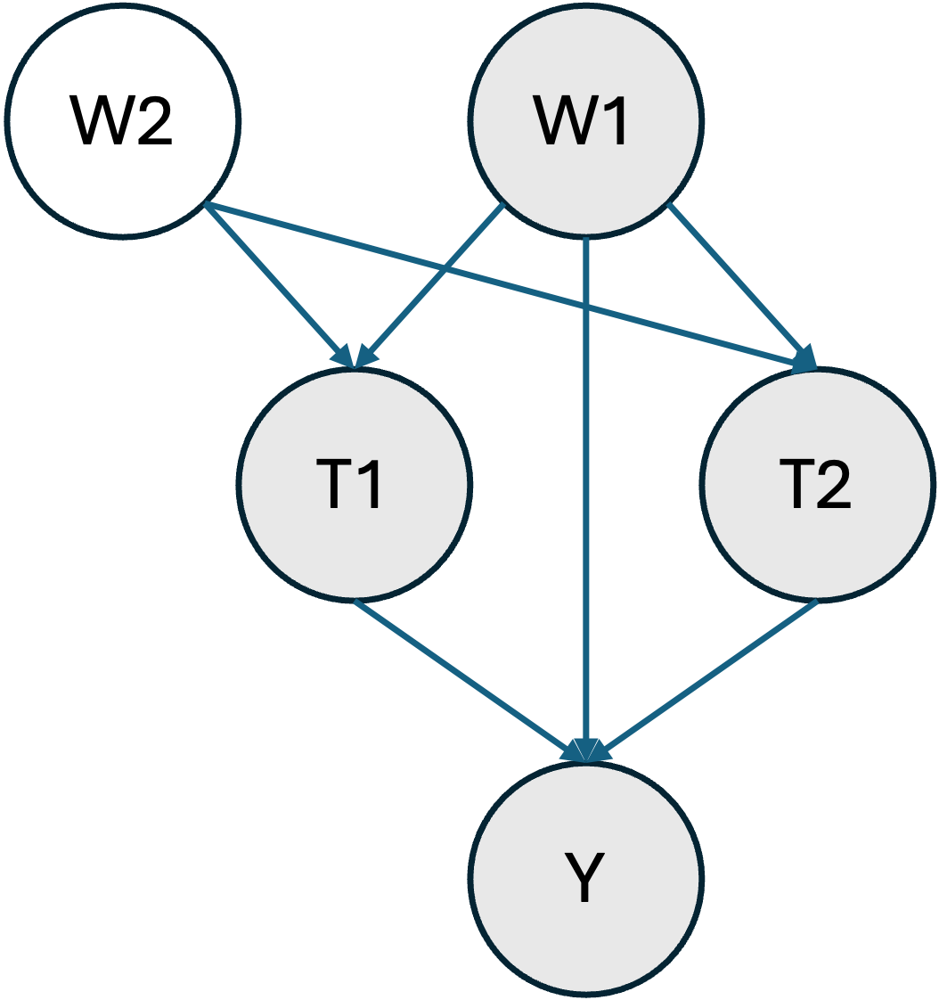
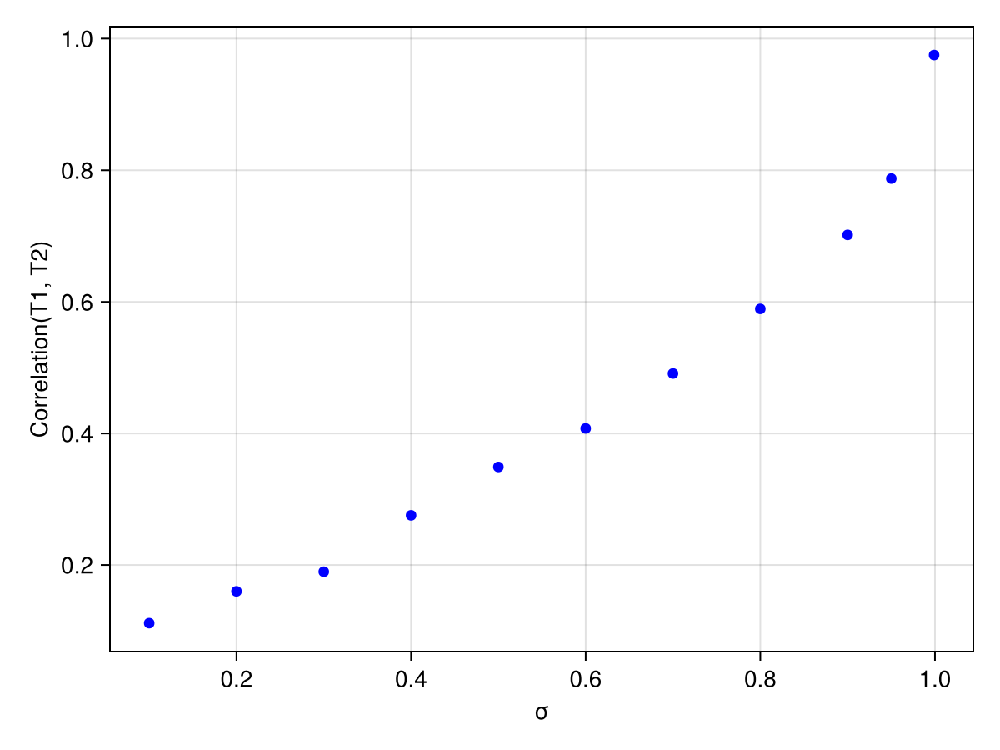
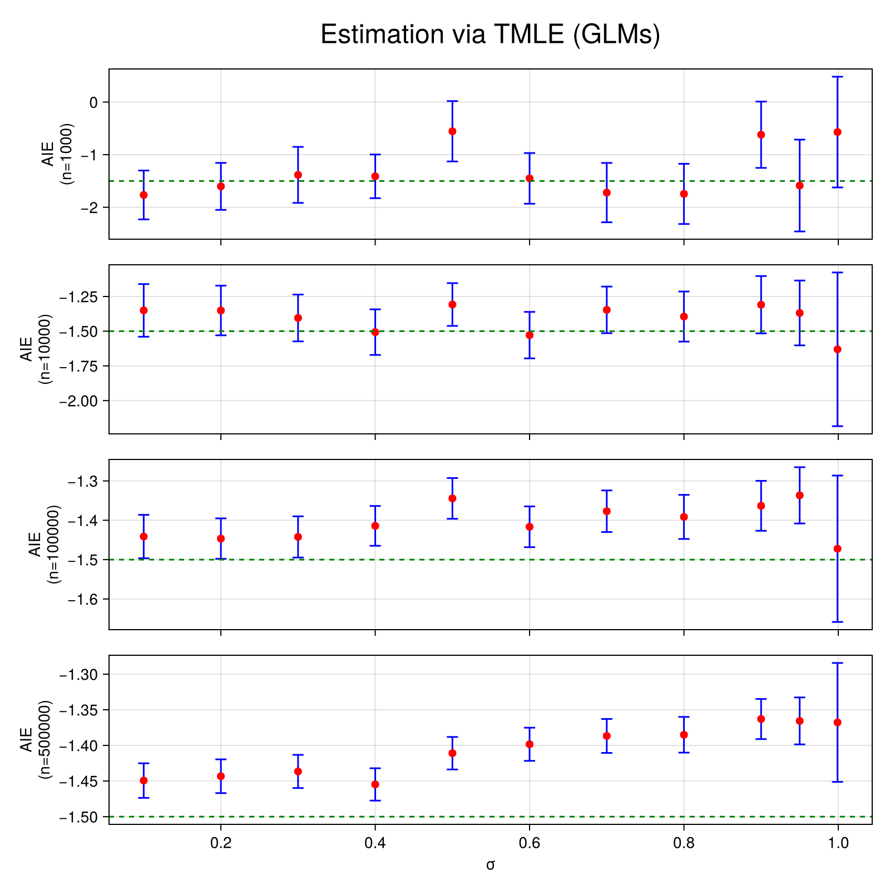
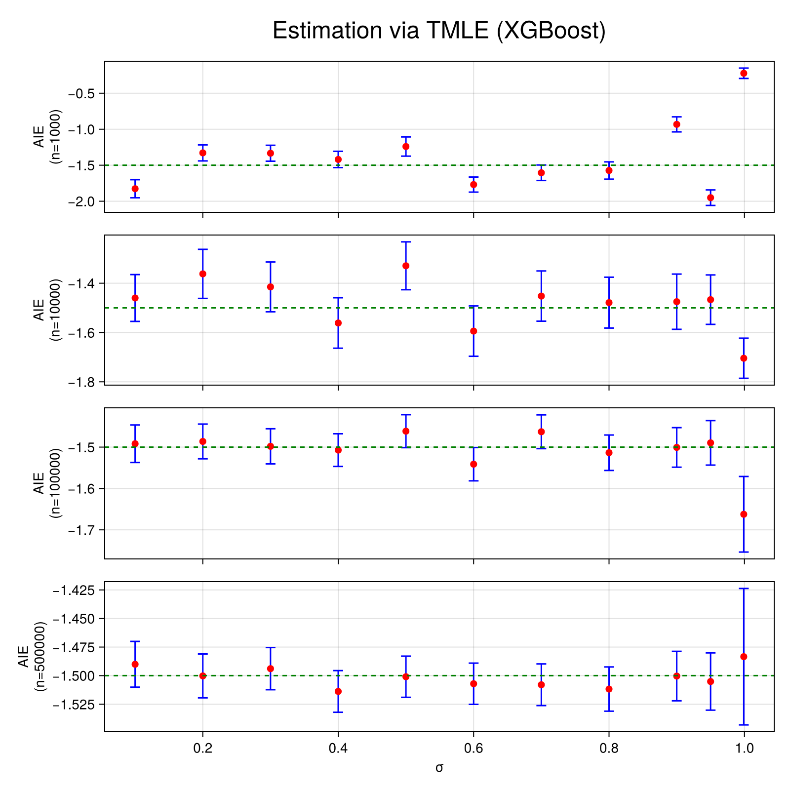
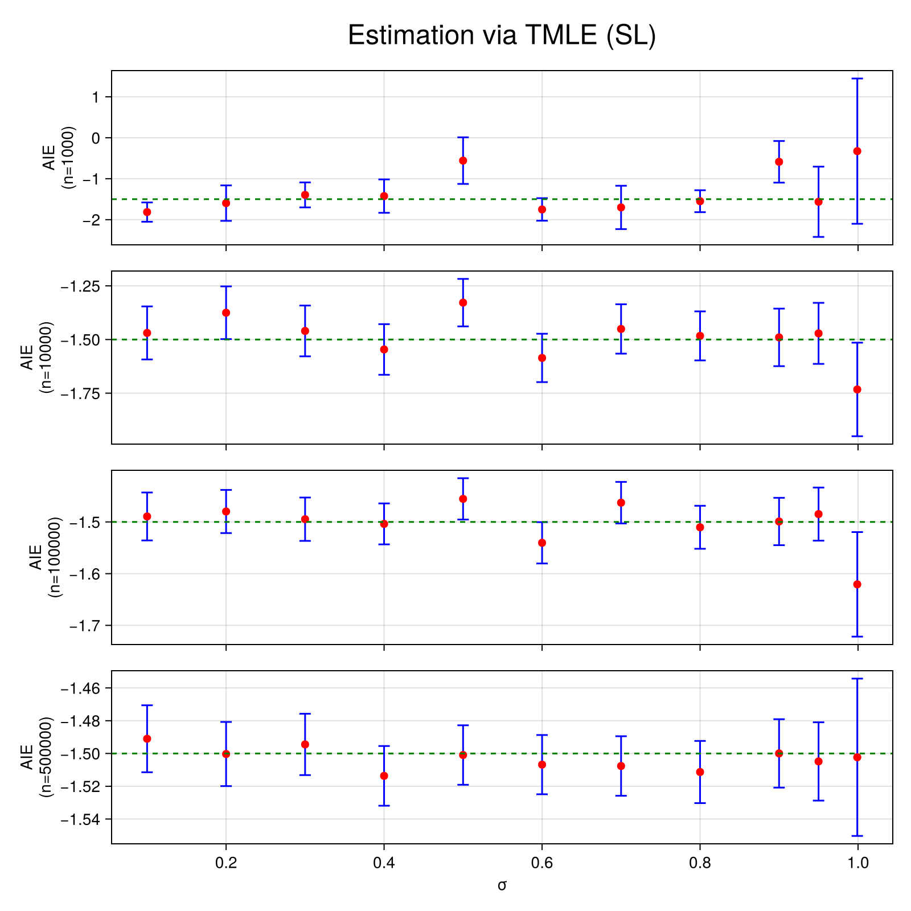

Interaction Estimation
In this example we aim to estimate the average interaction effect of two, potentially correlated, treatment variables T1 and T2 on an outcome Y.
Data Generating Process
Let's consider the following structural causal model where the shaded nodes represent the observed variables.

In other words, only one confounding variable is observed (W1). This would be a major problem if we wanted to estimate the average treatment effect of T1 or T2 on Y separately. However, here, we are interested in interactions and thus W1 is a sufficient adjustment set. This artificial situation is ubiquitous in genetics, where two main sources of confounding exist. Ancestry, can be estimated (here W1) and linkage disequilibrium is usually more challenging to address (here W2).
Let us first define some helper functions and import some libraries.
using Distributions
using Random
using DataFrames
using Statistics
using CategoricalArrays
using TMLE
using CairoMakie
using MLJXGBoostInterface
using MLJBase
using MLJLinearModels
using MLJTuning
using StatisticalMeasures
function estimate_across_correlation_levels(estimators, σs; n=1000)
results = Dict(key => [] for key in keys(estimators))
for σ in σs
dataset = generate_dataset(n=n, σ=σ)
for (estimator_key, estimator) in estimators
result, _ = estimator(Ψ, dataset; verbosity=0)
push!(results[estimator_key], result)
end
end
return results
end
function estimate_across_sample_sizes_and_correlation_levels(estimators, ns, σs)
results = []
for n in ns
results_at_n = estimate_across_correlation_levels(estimators, σs; n=n)
push!(results, results_at_n)
end
return results
end
function plot_across_sample_sizes_and_correlation_levels(results, ns, σs; estimator="TMLE_SL", title="Estimation via TMLE (GLMs)")
fig = Figure(size=(800, 800))
for (index, n) in enumerate(ns)
results_at_n = results[index][estimator]
Ψ̂s = TMLE.estimate.(results_at_n)
errors = last.(confint.(significance_test.(results_at_n))) .- Ψ̂s
ax = if n == last(ns)
Axis(fig[index, 1], xlabel="σ", ylabel="AIE\n(n=$n)")
else
Axis(fig[index, 1], ylabel="AIE\n(n=$n)", xticklabelsvisible=false)
end
errorbars!(ax, σs, Ψ̂s, errors, color = :blue, whiskerwidth = 10)
scatter!(ax, σs, Ψ̂s, color=:red, markersize=10)
hlines!(ax, [-1.5], color=:green, linestyle=:dash)
end
Label(fig[0, :], title; tellwidth=false, fontsize=24)
return fig
end
Random.seed!(123)
μT(w) = [sum(w), sum(w)]
μY(t, w) = 1 + 10t[1] - 3t[2] * t[1] * wμY (generic function with 1 method)We assume that W1 and W2, the confounding variables, follow a uniform distribution.
generate_W(n) = rand(Uniform(0, 1), 2, n)generate_W (generic function with 1 method)T1 and T2 are generated via a copula method through a multivariate normal to induce some statistical dependence (via σ).
function generate_T(W, n; σ=0.5, threshold=0)
covariance = [
1. σ
σ 1.
]
T = zeros(Bool, 2, n)
for i in 1:n
dTi = MultivariateNormal(μT(W[:, i]), covariance)
T[:, i] = rand(dTi) .> threshold
end
return T
endgenerate_T (generic function with 1 method)Finally, Y is generated through a simple linear model with an interaction term.
function generate_Y(T, W1, n; σY=1)
Y = zeros(Float64, n)
for i in 1:n
dY = Normal(μY(T[:, i], W1[i]), σY)
Y[i] = rand(dY)
end
return Y
endgenerate_Y (generic function with 1 method)Importantly, the average interaction effect between T1 and T2 is thus $-3 \mathbb{E}[W] = -1.5$.
We will generate a full dataset with the following function.
function generate_dataset(;n=1000, σ=0.5, threshold=0., σY=1)
W = generate_W(n)
T = generate_T(W, n; σ=σ, threshold=threshold)
W = permutedims(W)
W1 = W[:, 1]
W2 = W[:, 2]
Y = generate_Y(T, W1, n; σY=σY)
T = permutedims(T)
T1 = categorical(T[:, 1])
T2 = categorical(T[:, 2])
return DataFrame(W1=W1, W2=W2, T1=T1, T2=T2, Y=Y)
end
dataset = generate_dataset()
first(dataset, 5)| Row | W1 | W2 | T1 | T2 | Y |
|---|---|---|---|---|---|
| Float64 | Float64 | Cat… | Cat… | Float64 | |
| 1 | 0.9063 | 0.443494 | true | true | 7.34663 |
| 2 | 0.745673 | 0.512083 | true | true | 6.30484 |
| 3 | 0.253849 | 0.334152 | true | true | 9.73191 |
| 4 | 0.427328 | 0.867547 | true | false | 9.49304 |
| 5 | 0.0991336 | 0.125287 | true | true | 11.2495 |
Let's verify that each treatment level is sufficiently present in the dataset (≈positivity).
combine(groupby(dataset, [:T1, :T2]), proprow => :JOINT_TREATMENT_FREQ)| Row | T1 | T2 | JOINT_TREATMENT_FREQ |
|---|---|---|---|
| Cat… | Cat… | Float64 | |
| 1 | false | false | 0.073 |
| 2 | false | true | 0.098 |
| 3 | true | false | 0.107 |
| 4 | true | true | 0.722 |
And that T1 and T2 are indeed correlated.
treatment_correlation(dataset) = cor(unwrap.(dataset.T1), unwrap.(dataset.T2))
treatment_correlation(dataset)0.2918769031970086Estimation
We can now proceed to estimation, for instance using TMLE with linear models.
First, let's define the effect of interest. Interactions are defined via the AIE function (note that we only set W1 as a confounder).
Ψ = AIE(
outcome=:Y,
treatment_values= (
T1=(case=1, control=0),
T2=(case=1, control=0)
),
treatment_confounders = [:W1]
)
linear_models = default_models(G=LogisticClassifier(lambda=0), Q_continuous=LinearRegressor())
estimator = Tmle(models=linear_models, weighted=true)
result, _ = estimator(Ψ, dataset; verbosity=0)
significance_test(result)One sample t-test
-----------------
Population details:
parameter of interest: Mean
value under h_0: 0
point estimate: -1.61436
95% confidence interval: (-2.232, -0.997)
Test summary:
outcome with 95% confidence: reject h_0
two-sided p-value: <1e-06
Details:
number of observations: 1000
t-statistic: -5.1311495228273545
degrees of freedom: 999
empirical standard error: 0.31462034088355434
The true effect size is thus covered by our confidence interval.
Varying levels of correlation
We will now vary the correlation level between T1 and T2 to observe how it affects the estimation results across samples sizes. We will also look at three different modelling strategies:
- Generalized linear models (GLMs)
- XGBoost
- Super Learning (SL) via a model selection approach
First, let's see how the parameter σ affects the correlation between T1 and T2.
function plot_correlations(;σs = 0.1:0.1:1, n=1000, threshold=0., σY=1.)
fig = Figure()
ax = Axis(fig[1, 1], xlabel="σ", ylabel="Correlation(T1, T2)")
correlations = map(σs) do σ
dataset = generate_dataset(;n=n, σ=σ, threshold=threshold, σY=σY)
return treatment_correlation(dataset)
end
scatter!(ax, σs, correlations, color=:blue)
return fig
end
σs = [0.1, 0.2, 0.3, 0.4, 0.5, 0.6, 0.7, 0.8, 0.9, 0.95, 0.999]
plot_correlations(;σs=σs, n=10_000)
As expected, the correlation between T1 and T2 increases with σ. Let's see how this affects estimation.
We first define our Super Learners, they compare L2 penalized GLM and XGboost models for various penalization parameters λ on a holdout set and select the best model.
lambdas = 10 .^ range(1, stop=-4, length=5)
linear_regressors = [RidgeRegressor(lambda=λ) for λ in lambdas]
logistic_classifiers = [LogisticClassifier(lambda=λ) for λ in lambdas]
xgboost_classifiers = [XGBoostClassifier(tree_method="hist", lambda=λ, nthread=1) for λ in lambdas]
xgboost_regressors = [XGBoostRegressor(tree_method="hist", lambda=λ, nthread=1) for λ in lambdas]
sl_regressor = TunedModel(
models=vcat(linear_regressors, xgboost_regressors),
resampling=Holdout(),
measure=rmse,
check_measure=false
)
sl_classifier = TunedModel(
models=vcat(logistic_classifiers, xgboost_classifiers),
resampling=Holdout(),
measure=log_loss,
check_measure=false
)ProbabilisticTunedModel(
model = LogisticClassifier(
lambda = 10.0,
gamma = 0.0,
penalty = :l2,
fit_intercept = true,
penalize_intercept = false,
scale_penalty_with_samples = true,
solver = nothing),
tuning = Explicit(),
resampling = Holdout(
fraction_train = 0.7,
shuffle = false,
rng = Random.TaskLocalRNG()),
measure = LogLoss(tol = 2.22045e-16),
weights = nothing,
class_weights = nothing,
operation = nothing,
range = MLJModelInterface.Probabilistic[LogisticClassifier(lambda = 10.0, …), LogisticClassifier(lambda = 0.5623413251903491, …), LogisticClassifier(lambda = 0.03162277660168379, …), LogisticClassifier(lambda = 0.0017782794100389228, …), LogisticClassifier(lambda = 0.0001, …), XGBoostClassifier(test = 1, …), XGBoostClassifier(test = 1, …), XGBoostClassifier(test = 1, …), XGBoostClassifier(test = 1, …), XGBoostClassifier(test = 1, …)],
selection_heuristic = MLJTuning.NaiveSelection(nothing),
train_best = true,
repeats = 1,
n = nothing,
acceleration = CPU1{Nothing}(nothing),
acceleration_resampling = CPU1{Nothing}(nothing),
check_measure = false,
cache = true,
compact_history = true,
logger = nothing)Now define the sample sizes and correlation levels we want to explore.
ns = [1000, 10_000, 100_000, 500_000]
σs = [0.1, 0.2, 0.3, 0.4, 0.5, 0.6, 0.7, 0.8, 0.9, 0.95, 0.999]11-element Vector{Float64}:
0.1
0.2
0.3
0.4
0.5
0.6
0.7
0.8
0.9
0.95
0.999and estimate (this will take a little while).
estimators = Dict(
"TMLE_GLM" => Tmle(models=linear_models, weighted=true),
"TMLE_XGBOOST" => Tmle(
models=default_models(G=XGBoostClassifier(tree_method="hist", nthread=1), Q_continuous=XGBoostRegressor(tree_method="hist", nthread=1)),
weighted=true,
),
"TMLE_SL" => Tmle(
models=default_models(G=sl_classifier, Q_continuous=sl_regressor),
weighted=true,
)
)
results = estimate_across_sample_sizes_and_correlation_levels(estimators, ns, σs)4-element Vector{Any}:
Dict{String, Vector{Any}}("TMLE_XGBOOST" => [TMLE.TMLEstimate{Float64}(TMLE.StatisticalAIE(:Y, OrderedCollections.OrderedDict(:T1 => (control = 0, case = 1), :T2 => (control = 0, case = 1)), OrderedCollections.OrderedDict(:T1 => (:W1,), :T2 => (:W1,)), ()), -1.8264895119272448, 2.024153644967099, 1000, [-0.44952758997108483, -2.128900346003171, 2.488969933055741, 3.2672965758129786, 1.6092110667489123, -0.8351578023735722, -1.0157072658739683, -1.7309617337983636, 0.8648167487816749, 3.4715598443491826 … -2.1291016836646426, 2.433286391523281, 2.3052918010395707, -0.08205942440235647, -2.2220414388207876, -0.38559607016964237, 0.011864374471034056, 3.3728271725685603, -0.8922054998147926, -0.1907510387452264]), TMLE.TMLEstimate{Float64}(TMLE.StatisticalAIE(:Y, OrderedCollections.OrderedDict(:T1 => (control = 0, case = 1), :T2 => (control = 0, case = 1)), OrderedCollections.OrderedDict(:T1 => (:W1,), :T2 => (:W1,)), ()), -1.328742890691243, 1.79271141689499, 1000, [-4.161933706463665, -0.12799358091632107, 1.0188696279246694, 0.38970609117858956, -1.9243373747348467, -0.3662198881719997, 0.270503838037766, -2.0959480054431214, 1.2565278082038445, 0.7447702986247694 … 0.2294037445227292, 0.5531394122079987, 2.345586481216513, -3.339392891792684, -0.49235838077298655, 2.1896290619134393, 1.9750071799735491, 0.792082811482819, -1.0475635317418603, -1.311641962483366]), TMLE.TMLEstimate{Float64}(TMLE.StatisticalAIE(:Y, OrderedCollections.OrderedDict(:T1 => (control = 0, case = 1), :T2 => (control = 0, case = 1)), OrderedCollections.OrderedDict(:T1 => (:W1,), :T2 => (:W1,)), ()), -1.3334838579791062, 1.7836283133718596, 1000, [3.9231046172774118, -1.2386989270533266, -0.8349003573821367, 2.600472957893489, -0.2956174440465984, 0.1440372445620145, -0.6197023823004839, -0.812840750835361, 0.6475308495389203, 1.9746178712732987 … -2.9731867387789594, -0.985050646048613, -2.1537141954619363, -2.162994764637621, -0.453586483899969, 0.3934171977606119, -0.5864823861290094, -0.43175321228770525, -2.955215336288802, -1.4365534867217413]), TMLE.TMLEstimate{Float64}(TMLE.StatisticalAIE(:Y, OrderedCollections.OrderedDict(:T1 => (control = 0, case = 1), :T2 => (control = 0, case = 1)), OrderedCollections.OrderedDict(:T1 => (:W1,), :T2 => (:W1,)), ()), -1.4198750153321096, 1.8282172771094585, 1000, [2.106751110678214, -3.1561258319998835, 2.2459994564692827, -0.15237816229419965, -1.1630665096448687, -2.156351739509536, -2.259392059788252, -0.9840997558533479, -0.8013046988880123, 2.48659359083754 … -2.2113697574254907, 0.36623231694158975, -1.7857453623775088, 1.081646257272773, 2.2735157467637874, -1.6979951859715712, 0.4655243102446022, -1.7669380277609839, -0.6377029509590961, 1.7680385454410992]), TMLE.TMLEstimate{Float64}(TMLE.StatisticalAIE(:Y, OrderedCollections.OrderedDict(:T1 => (control = 0, case = 1), :T2 => (control = 0, case = 1)), OrderedCollections.OrderedDict(:T1 => (:W1,), :T2 => (:W1,)), ()), -1.240331165334193, 2.1506758600693057, 1000, [-1.595442930812526, -3.7750355099368726, 2.1789010363433783, -0.4901122185596427, -2.1626257824481074, 3.152412669194706, 1.3032061217384954, 1.3920538075157716, -1.074978668893705, 3.214792916489313 … 1.7620953050163122, 0.16515231137888609, 2.3612300437584155, -2.0325794286297483, 1.213253179900929, -1.392806191380348, -8.424143662617023, -2.5401360419658965, 0.41706400280544964, -1.5144207473082656]), TMLE.TMLEstimate{Float64}(TMLE.StatisticalAIE(:Y, OrderedCollections.OrderedDict(:T1 => (control = 0, case = 1), :T2 => (control = 0, case = 1)), OrderedCollections.OrderedDict(:T1 => (:W1,), :T2 => (:W1,)), ()), -1.7689537988863568, 1.6857934744023149, 1000, [1.0677037806235354, -0.5502254353459166, -1.041458217632464, -0.3821269950795191, -1.716227340827572, -0.4894273824126363, 0.69900649545394, -0.944270917805101, 2.084897263528315, -1.642802858830811 … 2.543812897662618, -0.2369617756173874, -0.49756626191613984, -1.0778685545468978, 1.3369113511709267, -0.28096859568640764, 0.9209345758895454, 1.9762612432149216, -0.8115323211833723, 1.990309362122526]), TMLE.TMLEstimate{Float64}(TMLE.StatisticalAIE(:Y, OrderedCollections.OrderedDict(:T1 => (control = 0, case = 1), :T2 => (control = 0, case = 1)), OrderedCollections.OrderedDict(:T1 => (:W1,), :T2 => (:W1,)), ()), -1.6046155310603003, 1.7354946247896927, 1000, [0.22550833311245125, 0.2875900840763108, 1.3187087029895628, -0.412523811523111, -1.2653046304679065, 0.9874825857620333, 0.010453535969775718, -1.6360980789801827, -2.2103612563062454, -1.193567768772 … -1.3825990341211352, 2.939610282994317, -1.6271012082300589, -1.2615560605532323, -1.9045804126140666, 1.5294532323557688, -1.0543656893806572, -2.147172050747427, 0.02077377994799423, 2.894177204808707]), TMLE.TMLEstimate{Float64}(TMLE.StatisticalAIE(:Y, OrderedCollections.OrderedDict(:T1 => (control = 0, case = 1), :T2 => (control = 0, case = 1)), OrderedCollections.OrderedDict(:T1 => (:W1,), :T2 => (:W1,)), ()), -1.5733404283016383, 1.9354799339926096, 1000, [1.331305842844542, -2.079530189443958, 2.0213225625624656, 0.729088031896693, 0.659215598121587, -1.749405439928409, -1.3865286542842592, -0.8429204103490111, 2.271792272366799, 0.6425468000739785 … -1.3652187259076873, 0.24545230365360532, -2.9635922774979475, 1.3558163336201452, -1.7510526627105891, 0.6878137593965966, -0.92080968259514, -1.5061159610425663, -1.2546835837536885, -1.800485917396626]), TMLE.TMLEstimate{Float64}(TMLE.StatisticalAIE(:Y, OrderedCollections.OrderedDict(:T1 => (control = 0, case = 1), :T2 => (control = 0, case = 1)), OrderedCollections.OrderedDict(:T1 => (:W1,), :T2 => (:W1,)), ()), -0.9323126728977054, 1.6861633937392657, 1000, [-1.945877032458312, -1.0162537662251165, -1.8718557399875115, 2.2625214831253917, 3.74311262725507, -0.9055506441058778, -0.06040070440951942, -3.6351091986962576, -2.0076067954602625, -2.3513476099737742 … -0.04119866563214436, -0.16022191163014088, -1.6152086876437752, -0.18942586546375523, 2.2720500496363467, 1.721278957874047, 4.034180404766813, 5.570518188085451, -2.089155444618944, -3.63128266511805]), TMLE.TMLEstimate{Float64}(TMLE.StatisticalAIE(:Y, OrderedCollections.OrderedDict(:T1 => (control = 0, case = 1), :T2 => (control = 0, case = 1)), OrderedCollections.OrderedDict(:T1 => (:W1,), :T2 => (:W1,)), ()), -1.9509053746775982, 1.7376661598888514, 1000, [-0.60205032659843, 0.6939557203491656, -0.789457946424948, -0.471311920842671, -1.215741858470603, -0.43191632131582686, 0.4965828650339404, 1.1602595745655253, -0.4234749326826426, 0.7773613269163772 … -4.351837910732819, -1.6523713700338998, 2.3544642239360525, -2.204784478163016, -2.819146786721621, -1.978553352338386, 2.5877295763674084, 3.6578181748792016, -0.1102144952631059, 3.860852981667949]), TMLE.TMLEstimate{Float64}(TMLE.StatisticalAIE(:Y, OrderedCollections.OrderedDict(:T1 => (control = 0, case = 1), :T2 => (control = 0, case = 1)), OrderedCollections.OrderedDict(:T1 => (:W1,), :T2 => (:W1,)), ()), -0.2226897302553447, 1.1598558071587577, 1000, [-0.7810185644484081, 1.1120981096968492, -0.005349002542841957, -1.4485429714081373, -0.7952697437144712, -0.32735673411121347, 1.3254663688663262, -0.3674597733453068, -0.4326009420028627, -0.2596720370178255 … -1.351760693885438, -1.0496686312295822, -0.2790548302340878, -0.23869251295590171, -1.2500023086075633, 1.056225736819489, 1.518341623251882, 1.2364851964164814, -0.7112442775134911, -0.741190810196913])], "TMLE_SL" => [TMLE.TMLEstimate{Float64}(TMLE.StatisticalAIE(:Y, OrderedCollections.OrderedDict(:T1 => (control = 0, case = 1), :T2 => (control = 0, case = 1)), OrderedCollections.OrderedDict(:T1 => (:W1,), :T2 => (:W1,)), ()), -1.8150400307964332, 3.793980322919209, 1000, [0.041532331016894575, -2.4375924273079965, 2.595357214252084, 5.587648367881819, 2.047347436041944, -0.7881950266266952, -0.37347138029018667, -1.7784420419988989, 0.8865276373643494, 3.011087940229363 … -2.043294149407105, 2.3604685842900546, 1.5101158560088377, 13.003706065706744, -1.9351991972252687, 0.2548046584556589, 0.8747881431968421, 5.911916822399915, -0.36520205130879224, -0.6355619329219266]), TMLE.TMLEstimate{Float64}(TMLE.StatisticalAIE(:Y, OrderedCollections.OrderedDict(:T1 => (control = 0, case = 1), :T2 => (control = 0, case = 1)), OrderedCollections.OrderedDict(:T1 => (:W1,), :T2 => (:W1,)), ()), -1.5966053429463327, 6.975126186522608, 1000, [-3.6085527608618095, 5.001928844535327, 0.4401108439309967, 3.661250065735267, 0.7248233761635746, -2.1283751205333195, -1.3445189949040288, -2.481624546089882, 2.1938549898718867, 0.20090477435969817 … 1.469161604818267, 0.11932509426693245, 3.46376027656326, -1.6050602760500805, -0.2618926481439446, -3.1583835278620773, 2.0976943275409683, 3.507183877498414, 0.10843248270076493, -0.27855978404374954]), TMLE.TMLEstimate{Float64}(TMLE.StatisticalAIE(:Y, OrderedCollections.OrderedDict(:T1 => (control = 0, case = 1), :T2 => (control = 0, case = 1)), OrderedCollections.OrderedDict(:T1 => (:W1,), :T2 => (:W1,)), ()), -1.3956003729034991, 4.919906765473328, 1000, [3.385821402856612, -1.1348835745946992, -0.7635927067370228, 3.972585403851023, -3.1431599890392006, 0.2765656995777237, -1.5152243668946541, -0.08249748043368688, 3.325854721785307, 5.880552005085338 … -13.096648864117775, -1.7759147821940213, -5.191190040795805, -7.489998671943035, -0.735529793967376, 0.49379927208815455, -1.5822570915705356, -0.6691835811706546, -2.3149221838516123, -7.675868991508578]), TMLE.TMLEstimate{Float64}(TMLE.StatisticalAIE(:Y, OrderedCollections.OrderedDict(:T1 => (control = 0, case = 1), :T2 => (control = 0, case = 1)), OrderedCollections.OrderedDict(:T1 => (:W1,), :T2 => (:W1,)), ()), -1.4251688859609113, 6.572689474427532, 1000, [13.506657286440577, -1.9784381873045047, 2.074340572392834, 1.0744358894899844, 0.7754088151736056, -0.8170335081852493, 0.4602940433110945, 0.26579860190878246, 0.3334633904104495, 19.670282022251406 … -0.6735952294473425, 1.064268026629415, 0.4929626797080342, 2.0511356595920747, 11.6606121351839, -0.12046814658515063, 0.7552107337811238, 0.2587604428014091, -0.8959244558244641, 2.339011721382091]), TMLE.TMLEstimate{Float64}(TMLE.StatisticalAIE(:Y, OrderedCollections.OrderedDict(:T1 => (control = 0, case = 1), :T2 => (control = 0, case = 1)), OrderedCollections.OrderedDict(:T1 => (:W1,), :T2 => (:W1,)), ()), -0.5580527503214798, 9.177200589050887, 1000, [-0.35124770802741057, -1.4170018863924014, -6.668357610162678, -0.5977865028944128, -2.048123825221775, 5.195831512691228, 2.262526270879489, 1.9698746646877452, 0.33299879982484676, 2.592416060209583 … 6.233695511017485, 15.555994547205156, -0.02589627884919916, -0.4319349824815586, 1.704146127190026, -9.461602099339583, -37.83355243055195, -26.726027973843205, 0.9273271289209652, -15.518484439167283]), TMLE.TMLEstimate{Float64}(TMLE.StatisticalAIE(:Y, OrderedCollections.OrderedDict(:T1 => (control = 0, case = 1), :T2 => (control = 0, case = 1)), OrderedCollections.OrderedDict(:T1 => (:W1,), :T2 => (:W1,)), ()), -1.75089252108146, 4.4382619969026855, 1000, [1.0149762645743745, -3.1269352850497207, -0.8146431526304292, -0.181029781702991, -1.4598947247795753, -0.3049571596252358, -1.3104071311985463, -5.796049401309546, 2.110189160068522, -0.7937459687176651 … 5.680240427749525, -0.906720999438996, -0.1438519032706375, -0.9410891865342583, 0.7719721688307579, -6.293214173395255, 0.9486153709790692, 4.109027074311703, -3.735086980595336, 2.5899355485493922]), TMLE.TMLEstimate{Float64}(TMLE.StatisticalAIE(:Y, OrderedCollections.OrderedDict(:T1 => (control = 0, case = 1), :T2 => (control = 0, case = 1)), OrderedCollections.OrderedDict(:T1 => (:W1,), :T2 => (:W1,)), ()), -1.7011557104494885, 8.52848480704712, 1000, [0.36664344874395477, 1.6241218292745594, 1.0415363711340846, -0.08045868476691298, -13.813298878718854, 3.059868117541581, 1.1593590021332516, -1.1216579247839056, -1.332369224856271, -1.1581964082608411 … -0.8044337787399123, 19.546969306551734, -1.7523307149674594, -0.6871960960772996, 5.978703149155768, 2.9143365732046482, -3.5077868797044065, -2.172172104892096, 1.68782021468131, 11.94058254596682]), TMLE.TMLEstimate{Float64}(TMLE.StatisticalAIE(:Y, OrderedCollections.OrderedDict(:T1 => (control = 0, case = 1), :T2 => (control = 0, case = 1)), OrderedCollections.OrderedDict(:T1 => (:W1,), :T2 => (:W1,)), ()), -1.5493847045780869, 4.323274732738785, 1000, [6.286937587430449, -1.8494760104524266, 13.7686289639193, 0.9812197956396573, 0.4540055872375871, -6.771995936297012, -2.640845179178476, -0.898639720101228, 2.5752862636730836, 0.8109311818564408 … -1.755736042413585, -0.42754022844256956, -2.25698311137105, 1.3006973185761406, -2.435578208397407, 0.5994595135064336, -1.411847504336274, -1.5263590504825344, -0.7376196222158711, -2.4629076756113193]), TMLE.TMLEstimate{Float64}(TMLE.StatisticalAIE(:Y, OrderedCollections.OrderedDict(:T1 => (control = 0, case = 1), :T2 => (control = 0, case = 1)), OrderedCollections.OrderedDict(:T1 => (:W1,), :T2 => (:W1,)), ()), -0.587281550815177, 8.189754914671916, 1000, [-1.410892761546297, -11.824634463062553, -0.9466693838065026, 2.13200655688352, 10.371179284780476, 0.08537747829670449, 1.3369195959837576, -9.138956589172576, -0.8482020396644545, -1.6645792732868447 … 0.36200194506194444, 0.681910446271779, -0.3495398470269664, 0.7560103322829584, 12.990778249718513, 1.537200577006412, 23.808993075937256, 18.549762517994186, -0.825860983633026, -6.351197420926743]), TMLE.TMLEstimate{Float64}(TMLE.StatisticalAIE(:Y, OrderedCollections.OrderedDict(:T1 => (control = 0, case = 1), :T2 => (control = 0, case = 1)), OrderedCollections.OrderedDict(:T1 => (:W1,), :T2 => (:W1,)), ()), -1.563479433078085, 13.828938932465816, 1000, [-1.198144236710627, 0.9730630078176737, 1.160548107059181, 1.24699816822152, 0.13109889454326815, -0.18381626863091868, 25.7868295585209, 0.48830061147207804, 0.20492787549650662, 1.5251069840431046 … -3.4638391837844265, -0.4304728798787471, -4.334247075520931, -1.3653356632166842, -1.6342126490024156, 0.6398539039585526, 2.6067506624664123, 2.3365202308700264, 1.7995454835601135, 5.745545155134657]), TMLE.TMLEstimate{Float64}(TMLE.StatisticalAIE(:Y, OrderedCollections.OrderedDict(:T1 => (control = 0, case = 1), :T2 => (control = 0, case = 1)), OrderedCollections.OrderedDict(:T1 => (:W1,), :T2 => (:W1,)), ()), -0.32703807961308257, 28.58895520528915, 1000, [-0.7946451431575519, 2.998933228864985, -1.3771674235582747, 0.1262069126498637, -1.7069100074250994, 0.013648078853434446, 1.021392382709447, 0.6349276565031681, -0.10424337980491268, -0.1890540695591155 … -0.8917769609308972, -1.1823068006244595, 0.6296646511171495, -3.117905542798145, -1.9244605122249385, 1.7464301987270026, 3.9684095733345024, 2.7536375835060682, -0.6283270549100459, -1.3988877246517346])], "TMLE_GLM" => [TMLE.TMLEstimate{Float64}(TMLE.StatisticalAIE(:Y, OrderedCollections.OrderedDict(:T1 => (control = 0, case = 1), :T2 => (control = 0, case = 1)), OrderedCollections.OrderedDict(:T1 => (:W1,), :T2 => (:W1,)), ()), -1.7653675670111686, 7.479801705280857, 1000, [-0.9148692286617909, -1.557465905432251, 2.8677325154914457, 4.917118536495215, 3.7781264388195095, 1.154889595561908, 1.0555863911651948, -1.4732476054820645, 2.4630518128244927, 2.9962253625724697 … -1.403593017507305, 2.795640365769375, 0.21129243894904387, 121.38636098785345, -0.5313127090986351, 1.0370658231392482, 2.144566860259069, 6.566166308756044, 1.1002071492139995, 0.4968495437602853]), TMLE.TMLEstimate{Float64}(TMLE.StatisticalAIE(:Y, OrderedCollections.OrderedDict(:T1 => (control = 0, case = 1), :T2 => (control = 0, case = 1)), OrderedCollections.OrderedDict(:T1 => (:W1,), :T2 => (:W1,)), ()), -1.6025533477472245, 7.193408956657863, 1000, [-3.5623868519274415, 5.071904056846828, 0.43750687496569995, 3.7227588736450095, 0.7189992576804646, -2.111971053307859, -1.3287002039027151, -2.461494388518836, 2.1823377541300486, 0.22726242896199272 … 1.4618522970693426, 0.11988343808411686, 3.4282683560233576, -1.6285861900304033, -0.2563205806282323, -2.939759391854424, 2.0945793391469207, 3.269860964067491, 0.14718310847876084, -0.272628219788146]), TMLE.TMLEstimate{Float64}(TMLE.StatisticalAIE(:Y, OrderedCollections.OrderedDict(:T1 => (control = 0, case = 1), :T2 => (control = 0, case = 1)), OrderedCollections.OrderedDict(:T1 => (:W1,), :T2 => (:W1,)), ()), -1.3839666136861073, 8.581321391234617, 1000, [4.089334168460177, -0.6359999710025056, 0.16641387573627572, 7.805987825274456, 0.5879245683953257, 2.2336409557603534, 0.433172142378272, 0.0489278188128759, 7.675009852916912, 8.89017723270825 … -31.37970499155807, -1.567670071091918, -8.803245589888759, -13.057595118477415, -0.42348328627115434, 1.9601229729764884, -0.8678123404118991, -0.7192786430386362, -2.1809766306277942, -28.30452402623706]), TMLE.TMLEstimate{Float64}(TMLE.StatisticalAIE(:Y, OrderedCollections.OrderedDict(:T1 => (control = 0, case = 1), :T2 => (control = 0, case = 1)), OrderedCollections.OrderedDict(:T1 => (:W1,), :T2 => (:W1,)), ()), -1.411641855492746, 6.691187406541663, 1000, [14.312300074074768, -1.9680828697747783, 2.05899948876615, 1.0882732246995754, 0.7869885219630329, -0.8340430199625865, 0.461741984814369, 0.26990526707867696, 0.34303786480519505, 20.468084553897683 … -0.6902159149298496, 1.0485692556422963, 0.49564823863046037, 1.9941512920693112, 10.644591887426705, -0.11891104705268679, 0.7176243945790828, 0.21946108708320794, -0.9628704973031313, 2.8600959576915184]), TMLE.TMLEstimate{Float64}(TMLE.StatisticalAIE(:Y, OrderedCollections.OrderedDict(:T1 => (control = 0, case = 1), :T2 => (control = 0, case = 1)), OrderedCollections.OrderedDict(:T1 => (:W1,), :T2 => (:W1,)), ()), -0.5551373971652681, 9.242895414651288, 1000, [-0.35318136865230676, -1.4159918190554235, -6.607241623572904, -0.6000219336937516, -2.047375125634468, 5.201517695540342, 2.2265586175975423, 1.9672962657310253, 0.3314833280484628, 2.590033729082341 … 6.187979857824299, 15.75940104136621, -0.07227932473092667, -0.4311264308670779, 1.7011879746720018, -9.395694130204472, -38.01354603932777, -26.696903925527035, 0.89224011401729, -15.407768152862802]), TMLE.TMLEstimate{Float64}(TMLE.StatisticalAIE(:Y, OrderedCollections.OrderedDict(:T1 => (control = 0, case = 1), :T2 => (control = 0, case = 1)), OrderedCollections.OrderedDict(:T1 => (:W1,), :T2 => (:W1,)), ()), -1.450102751708997, 7.764369216299351, 1000, [1.834158000180607, -7.879056530108803, 0.47198648226829976, 0.6293537709024021, -0.67341333734815, 0.05847117464391901, 13.547576520470436, -2.0446424636022953, -5.643807726374677, 0.07148833155826685 … 2.922495257287352, -1.6006001036922486, -0.14878275581291667, -0.5682444593919825, 0.4106645473616628, -14.319179096503353, 1.7785460510539826, 3.171084569856915, -14.495640639681435, 2.6686829178202864]), TMLE.TMLEstimate{Float64}(TMLE.StatisticalAIE(:Y, OrderedCollections.OrderedDict(:T1 => (control = 0, case = 1), :T2 => (control = 0, case = 1)), OrderedCollections.OrderedDict(:T1 => (:W1,), :T2 => (:W1,)), ()), -1.7207093836204532, 9.08544168301198, 1000, [0.3200998113928868, 1.6014542393682738, 1.0384359750392964, -0.08927624254590968, -13.321841112242282, 3.0285654025791207, 1.1677600166423525, -1.1315692429953277, -1.3313281338099947, -1.1229953669082304 … -0.8119782464362835, 18.531507331067893, -1.7264181037125452, -0.7279839583209482, 6.692110969351027, 2.884359181753134, -3.1059698424192117, -2.1663653064119703, 1.6652972797508452, 12.00097940035509]), TMLE.TMLEstimate{Float64}(TMLE.StatisticalAIE(:Y, OrderedCollections.OrderedDict(:T1 => (control = 0, case = 1), :T2 => (control = 0, case = 1)), OrderedCollections.OrderedDict(:T1 => (:W1,), :T2 => (:W1,)), ()), -1.7451872580253025, 9.218033711876647, 1000, [22.963102183467456, -0.03685098608657454, 14.920187640441183, 1.3709817764458134, 0.09359012905779764, -8.798692689160776, -11.548924552193307, 0.3945239560148524, 3.285862883964283, 1.1319099083438107 … -1.521983814320027, -1.2044670970135314, -0.29929596170107703, 1.5439857142930884, -1.7996212450893716, 1.3246206511349905, -1.6585072726371552, -0.1166570760239046, 0.2195179760538089, -1.760301052514554]), TMLE.TMLEstimate{Float64}(TMLE.StatisticalAIE(:Y, OrderedCollections.OrderedDict(:T1 => (control = 0, case = 1), :T2 => (control = 0, case = 1)), OrderedCollections.OrderedDict(:T1 => (:W1,), :T2 => (:W1,)), ()), -0.6208830691530163, 10.160185499163942, 1000, [-1.3300876211815051, -13.453181286877518, -0.8823381529129676, 2.2824797720755887, 7.855176520489396, 0.09417497742225525, 1.3427531099687782, -10.015645813480383, -0.7952266466528121, -1.66903020566086 … 0.3605049942123332, 0.6477483826489396, -0.3211822266009667, 0.7707641498286278, 14.106458504350828, 1.6325420683188936, 25.876600314069968, 20.150126953393627, -0.7700226101983949, -6.968446399462646]), TMLE.TMLEstimate{Float64}(TMLE.StatisticalAIE(:Y, OrderedCollections.OrderedDict(:T1 => (control = 0, case = 1), :T2 => (control = 0, case = 1)), OrderedCollections.OrderedDict(:T1 => (:W1,), :T2 => (:W1,)), ()), -1.5862950649104164, 14.057702743741794, 1000, [-1.1948024192611113, 0.9781647440268437, 1.1658821811752276, 1.2518556215342234, 0.13707031978292258, -0.17723228398706198, 27.480354483518067, 0.49378484770681524, 0.21074386926190997, 1.5295232819279503 … -3.450918853226396, -0.4241166765435232, -4.279171697643281, -1.3583082005833556, -1.625007422405453, 0.6455791706858182, 2.6109477117738358, 2.3438452009889112, 1.8037282908729593, 5.764426671720124]), TMLE.TMLEstimate{Float64}(TMLE.StatisticalAIE(:Y, OrderedCollections.OrderedDict(:T1 => (control = 0, case = 1), :T2 => (control = 0, case = 1)), OrderedCollections.OrderedDict(:T1 => (:W1,), :T2 => (:W1,)), ()), -0.5704020797240845, 16.947894188661973, 1000, [-0.7344418882629046, 3.0287608056819044, -1.3264043357388626, 0.17375135264740285, -1.6201134447864465, 0.05478431122871582, 1.102557266661562, 0.6728620471402983, -0.04823019080834687, -0.1391018650340471 … -0.8522244068154482, -1.130800301373035, 0.6853625514636073, -2.8471201889842037, -1.898108990895799, 1.7960016071707658, 4.413218345642756, 2.7882232103089244, -0.5859890243492584, -1.088549222234967])])
Dict{String, Vector{Any}}("TMLE_XGBOOST" => [TMLE.TMLEstimate{Float64}(TMLE.StatisticalAIE(:Y, OrderedCollections.OrderedDict(:T1 => (control = 0, case = 1), :T2 => (control = 0, case = 1)), OrderedCollections.OrderedDict(:T1 => (:W1,), :T2 => (:W1,)), ()), -1.4598848573448233, 4.84757872176093, 10000, [-0.9775864381239527, -3.1854578230357165, 1.5448278721362811, 1.4113747912379009, -3.3201388448829725, 0.5599868472115181, -1.0323894336622448, 0.7042127443806911, 1.8149509934467192, 0.8207408839362054 … 1.692603093306418, 4.849848844149863, 1.3342787984915452, 1.9342232921228564, -0.38976689233994977, -0.5551207438038024, -0.14448679204599413, -1.0233741156049383, 10.22115403242836, -1.403062695896806]), TMLE.TMLEstimate{Float64}(TMLE.StatisticalAIE(:Y, OrderedCollections.OrderedDict(:T1 => (control = 0, case = 1), :T2 => (control = 0, case = 1)), OrderedCollections.OrderedDict(:T1 => (:W1,), :T2 => (:W1,)), ()), -1.362044793434657, 5.080214164605118, 10000, [1.0173008383483584, -12.470603111073563, -6.439019587002077, -1.2506808978281598, -0.014344090337307727, -0.9508568949636833, 0.2253633649439829, 1.4034129088243499, -2.121322952551016, 8.315659754725916 … 1.136748675744798, 1.2314172820420684, -2.3391714473977236, 1.378335135743951, 2.7603701005034815, 2.788609095437529, 1.3278403346331218, 0.3611515419707678, 14.630827972640656, 0.03383811023174266]), TMLE.TMLEstimate{Float64}(TMLE.StatisticalAIE(:Y, OrderedCollections.OrderedDict(:T1 => (control = 0, case = 1), :T2 => (control = 0, case = 1)), OrderedCollections.OrderedDict(:T1 => (:W1,), :T2 => (:W1,)), ()), -1.4148581283869768, 5.156713120661327, 10000, [-0.21347858439451683, 0.45410836029285084, 0.4305939816182484, -2.611394099864986, -2.7010734183062755, -1.4320973199478058, -2.969091375864903, 2.1793385646531855, 1.788275800948683, 7.764048201415445 … -3.029921044467655, -0.975312118992556, -0.06740550502115206, 2.2726999344011456, -1.1230903533425138, -6.913818172608291, 0.8795071243424102, 0.2708458761669521, 1.6863870319086554, 13.58188127797267]), TMLE.TMLEstimate{Float64}(TMLE.StatisticalAIE(:Y, OrderedCollections.OrderedDict(:T1 => (control = 0, case = 1), :T2 => (control = 0, case = 1)), OrderedCollections.OrderedDict(:T1 => (:W1,), :T2 => (:W1,)), ()), -1.5613406024812586, 5.221265680462536, 10000, [-4.5616278260337895, -0.6688375633053971, -14.648746692098566, -0.3820461015546443, -0.7344547233023873, 5.210482125607241, 0.2847754006768168, -1.1586227494535453, 1.3471277899513279, 2.259990251791786 … -4.067194789298374, 3.087641107174221, 0.4362925626794203, 2.9906472807299087, 0.6944694287379334, -1.6402990650640672, -9.43147772168035, -3.167276153643917, -2.5734024430163274, 1.4951433832647958]), TMLE.TMLEstimate{Float64}(TMLE.StatisticalAIE(:Y, OrderedCollections.OrderedDict(:T1 => (control = 0, case = 1), :T2 => (control = 0, case = 1)), OrderedCollections.OrderedDict(:T1 => (:W1,), :T2 => (:W1,)), ()), -1.3292658099647092, 4.955693027571589, 10000, [-0.35065772080959656, -2.217070146395078, -1.185431898648153, 0.8692777030935668, -0.12120953341328705, 0.4913104776201904, -1.4687056845954212, -0.9648289226888608, 2.926266515937476, -6.657036708019067 … 3.217123319610825, 4.0382440234491686, -2.520309577524264, 1.0458748966822315, 0.6499034274433817, -0.9660985675756701, -3.8640477273604024, -0.21109982006437947, -1.2657619657581458, -1.9244304488810877]), TMLE.TMLEstimate{Float64}(TMLE.StatisticalAIE(:Y, OrderedCollections.OrderedDict(:T1 => (control = 0, case = 1), :T2 => (control = 0, case = 1)), OrderedCollections.OrderedDict(:T1 => (:W1,), :T2 => (:W1,)), ()), -1.5942553891061824, 5.210608126063858, 10000, [-0.10311475153923277, 8.277441108985855, -2.510163786070185, -0.2890430238479079, -0.14724823015112787, -0.06685973994148486, -1.5500661575750678, 4.451842837191391, 1.7115060760175624, -0.5079837386796471 … -5.561704554424333, 2.110612702681826, 6.323577962033567, -6.575627858003404, 0.45089658194850346, 2.4904461010093293, 0.1744099466768324, -0.3600857091107029, -3.475295260908031, 4.46723151161501]), TMLE.TMLEstimate{Float64}(TMLE.StatisticalAIE(:Y, OrderedCollections.OrderedDict(:T1 => (control = 0, case = 1), :T2 => (control = 0, case = 1)), OrderedCollections.OrderedDict(:T1 => (:W1,), :T2 => (:W1,)), ()), -1.452154771225993, 5.199840689005111, 10000, [-0.9516710987766714, -0.44427843543088696, -2.577986280572357, 1.573391599976282, 1.5694528082802965, -0.6775504019642569, 0.3223705997631597, -0.922767964506618, 2.714531632967849, 2.1455928138990323 … -1.9371966477488658, -0.03541792353209894, -1.5667768634639805, -1.6811503178551916, -0.40964868872778826, -0.7902351053346928, 2.3660575783510778, 2.5380239728185536, 33.961427165126615, -0.8935590792881669]), TMLE.TMLEstimate{Float64}(TMLE.StatisticalAIE(:Y, OrderedCollections.OrderedDict(:T1 => (control = 0, case = 1), :T2 => (control = 0, case = 1)), OrderedCollections.OrderedDict(:T1 => (:W1,), :T2 => (:W1,)), ()), -1.478813763392832, 5.2635317294518345, 10000, [-0.665071810835683, -2.422410265376583, -0.31050754860025986, 12.32910631752033, -0.20825288621853288, 0.5618511762707287, -7.408169865656539, 1.7305739799031337, 1.022675840791845, -5.119330451815427 … 2.7346724210914277, 0.13335749482676817, -2.5121504890075697, -0.2808685514983909, -4.392573753561607, -1.9230022359104404, -1.1024083199893138, 0.3024850609766132, -0.40921051094272554, 1.3074228251235027]), TMLE.TMLEstimate{Float64}(TMLE.StatisticalAIE(:Y, OrderedCollections.OrderedDict(:T1 => (control = 0, case = 1), :T2 => (control = 0, case = 1)), OrderedCollections.OrderedDict(:T1 => (:W1,), :T2 => (:W1,)), ()), -1.474976224914042, 5.716019360738687, 10000, [-0.9401652580839179, -0.22952805248184682, 0.63297372755815, 0.6687558259452447, -3.0876540173253093, -4.188558428257989, -1.1699696723495705, 0.3745349746331036, -3.80220451073133, -0.8956632528994906 … -3.4092964723062114, 0.5287234818630977, -0.014807347678438276, -1.5295226585816333, 0.017521002434043087, 1.036437511609894, 0.6441094834517886, -0.2434447738986013, 1.2788786051350098, 7.51100709995757]), TMLE.TMLEstimate{Float64}(TMLE.StatisticalAIE(:Y, OrderedCollections.OrderedDict(:T1 => (control = 0, case = 1), :T2 => (control = 0, case = 1)), OrderedCollections.OrderedDict(:T1 => (:W1,), :T2 => (:W1,)), ()), -1.466684573913816, 5.11874806080554, 10000, [-1.7360576569883295, 16.108212755950554, 2.056442011084871, 5.491220000782432, 2.705924066867435, -0.27913501864461915, -0.30951276370471015, -1.7064249247405257, -4.2333821920581425, 1.550648612102513 … -2.5741460792623245, -0.06164504192053544, -1.0193992040010804, -2.5916862934636127, -0.8455592769065814, -0.7384748867097977, 1.0533917990322053, -4.310341486836646, 1.004110560459507, 0.44332968084068336]), TMLE.TMLEstimate{Float64}(TMLE.StatisticalAIE(:Y, OrderedCollections.OrderedDict(:T1 => (control = 0, case = 1), :T2 => (control = 0, case = 1)), OrderedCollections.OrderedDict(:T1 => (:W1,), :T2 => (:W1,)), ()), -1.7043891571623762, 4.153137274242447, 10000, [-0.6628595642207392, -3.2613898324103765, 0.4799363927969431, -0.2835375727669516, -2.66742472899813, -0.8388658461278556, -0.3754995541627832, -0.17466542308771005, 1.7160063122038796, -1.5521095432950873 … -0.022400705468068105, -1.8577320790534013, 0.327816545450545, -0.07450258271337246, -2.3087974177542447, -1.8725880802228585, 0.3412936747692292, -3.8000578692744753, -2.5171678881853308, 1.0205886787537601])], "TMLE_SL" => [TMLE.TMLEstimate{Float64}(TMLE.StatisticalAIE(:Y, OrderedCollections.OrderedDict(:T1 => (control = 0, case = 1), :T2 => (control = 0, case = 1)), OrderedCollections.OrderedDict(:T1 => (:W1,), :T2 => (:W1,)), ()), -1.4692701283353964, 6.301132604277437, 10000, [-0.6820553246256126, -2.4862162492971795, 2.049163109092209, 1.4604841174394863, -3.623071613761746, 0.46463269809900426, -1.3699165715518347, -0.20057392069906066, 2.2969113843149285, 0.8009551571948346 … 2.883462620850442, 4.8588315271772835, 1.1485463252514174, 2.0011443199639394, -0.5039375031891232, 0.014289255079480312, -0.35797058489469646, -1.8554905050909807, 9.740206809173749, -1.233806789128022]), TMLE.TMLEstimate{Float64}(TMLE.StatisticalAIE(:Y, OrderedCollections.OrderedDict(:T1 => (control = 0, case = 1), :T2 => (control = 0, case = 1)), OrderedCollections.OrderedDict(:T1 => (:W1,), :T2 => (:W1,)), ()), -1.3751921303169536, 6.268435782150428, 10000, [0.6009739522052151, -17.199449096649882, -8.027191152614852, -1.1190824081143347, -0.4141356101997351, -1.1092476388197674, 0.1404170466820273, 2.1124280965657363, -2.832698707463365, 8.4487043841817 … 0.816695685079583, 1.3932175068388115, -2.6647161745359336, 0.28829946944031315, 2.4156425977258547, 2.8825113481196842, 0.9426228468823299, 0.07562759279536535, 10.91466020157539, -0.135317305983233]), TMLE.TMLEstimate{Float64}(TMLE.StatisticalAIE(:Y, OrderedCollections.OrderedDict(:T1 => (control = 0, case = 1), :T2 => (control = 0, case = 1)), OrderedCollections.OrderedDict(:T1 => (:W1,), :T2 => (:W1,)), ()), -1.4599597624753233, 6.039479716827833, 10000, [-0.6806486507387542, -0.5225207399823745, 0.5244369763215952, -1.619582834237796, -2.57200113195276, -1.5984675932643941, -2.769077711639336, 3.148578537037425, 2.661363535147777, 8.332582919728859 … -2.949963782776665, -0.7576154357734932, 0.41526478962478974, 1.7600529211638385, -1.5475155979890012, -13.30263557730889, 0.8297913575833152, -0.20432547620554686, 1.4955726488611463, 8.007577593387197]), TMLE.TMLEstimate{Float64}(TMLE.StatisticalAIE(:Y, OrderedCollections.OrderedDict(:T1 => (control = 0, case = 1), :T2 => (control = 0, case = 1)), OrderedCollections.OrderedDict(:T1 => (:W1,), :T2 => (:W1,)), ()), -1.5463319478408595, 6.017868719328914, 10000, [-4.953591721299748, -1.0489597499883032, -16.94439796683794, -0.4115954304358996, -2.5778337997938188, 4.437957981431746, -0.20464095855397618, -1.0817080865082145, 1.2241784620859806, 2.331704239052168 … -3.630962337848594, 3.5034309566969775, 0.36011614035772377, 2.6846739627469427, 0.036624373262105325, -1.4450756951504407, -6.944179479792434, -3.047735308878548, -2.411876181447345, 1.4570379051361786]), TMLE.TMLEstimate{Float64}(TMLE.StatisticalAIE(:Y, OrderedCollections.OrderedDict(:T1 => (control = 0, case = 1), :T2 => (control = 0, case = 1)), OrderedCollections.OrderedDict(:T1 => (:W1,), :T2 => (:W1,)), ()), -1.3281461098248355, 5.647616423555699, 10000, [-0.13832823367455027, -1.7392827109637234, -2.837503314126005, 0.5031244779225579, 0.6920654076538191, 0.21457549493541261, -1.3697690269084597, -0.2953812477588149, 4.033255884777817, -5.460632771006716 … 2.4977170505149298, 3.655819168172023, -2.4537901257258232, 0.8911379902029033, 0.44350518176012355, -0.8960095149207354, -3.5532968202293533, -0.42305917924094527, -1.7357230791605693, -1.6801770572485066]), TMLE.TMLEstimate{Float64}(TMLE.StatisticalAIE(:Y, OrderedCollections.OrderedDict(:T1 => (control = 0, case = 1), :T2 => (control = 0, case = 1)), OrderedCollections.OrderedDict(:T1 => (:W1,), :T2 => (:W1,)), ()), -1.5857191551971228, 5.7474384248678625, 10000, [-0.24015280144314433, 12.017016413379466, 0.93557855611873, -0.31594359184543347, -0.2878692972192119, 0.2860662686429697, -1.3420998453157753, 4.016510658169162, 1.5677709517291945, -0.7908759711149764 … -5.137682330179303, 0.661682470475745, 5.743196728058296, -10.27674382745435, 0.3658070709840867, 4.833258604191865, -2.952627163917259, -0.14567399622533875, -3.300048606425685, 6.160577306995843]), TMLE.TMLEstimate{Float64}(TMLE.StatisticalAIE(:Y, OrderedCollections.OrderedDict(:T1 => (control = 0, case = 1), :T2 => (control = 0, case = 1)), OrderedCollections.OrderedDict(:T1 => (:W1,), :T2 => (:W1,)), ()), -1.4506993314374275, 5.873286628293478, 10000, [-1.4295174002383102, -0.3253729201355794, -1.9997157519318827, -1.0761282747930654, 1.6126972876794403, -0.5568175604530529, 0.4164279388664437, -0.5447873843963587, 2.529900509912901, 0.6576298589492854 … -2.1493739016088007, 0.29518465474658595, -0.9283322800166278, -2.163693520977826, -0.7831426661499343, -1.1106446164184507, 1.199146519948742, 2.6568438638380147, 35.0145138590389, -0.4380642600225946]), TMLE.TMLEstimate{Float64}(TMLE.StatisticalAIE(:Y, OrderedCollections.OrderedDict(:T1 => (control = 0, case = 1), :T2 => (control = 0, case = 1)), OrderedCollections.OrderedDict(:T1 => (:W1,), :T2 => (:W1,)), ()), -1.4830837755420825, 5.822337199724539, 10000, [-0.4052033761768926, -2.955089525885712, -0.35210713007678485, 14.91761822124972, -0.36566752214969156, 0.42260690918219224, -4.446190513451721, 1.6103862213328624, -0.18131451893131617, -9.66977150572624 … 2.609163627139001, -0.4674433066258794, -2.2680043936849708, -0.7825462875536748, -4.534830607944385, -0.8948794159813335, -2.468796674352534, 0.5899182125825461, -0.7233793694158115, 1.0179556475948122]), TMLE.TMLEstimate{Float64}(TMLE.StatisticalAIE(:Y, OrderedCollections.OrderedDict(:T1 => (control = 0, case = 1), :T2 => (control = 0, case = 1)), OrderedCollections.OrderedDict(:T1 => (:W1,), :T2 => (:W1,)), ()), -1.4900976788588787, 6.84021966130247, 10000, [-0.9930349862415753, -0.20578690823580836, 0.8015671688120967, 0.31324904373796064, -2.8904893600375914, -5.561112258258104, -1.2022437110049025, 0.31954847817411314, -3.8059205263689924, -0.9086606866036613 … -10.405555884229857, 0.1850621094181093, 0.3372777815849439, -1.569183673119959, -0.04133299210509189, -0.29297967293942584, 0.7770871337041043, -0.509339600241651, 1.8010790599527449, 7.428991719421541]), TMLE.TMLEstimate{Float64}(TMLE.StatisticalAIE(:Y, OrderedCollections.OrderedDict(:T1 => (control = 0, case = 1), :T2 => (control = 0, case = 1)), OrderedCollections.OrderedDict(:T1 => (:W1,), :T2 => (:W1,)), ()), -1.4713443537974842, 7.2556275862563115, 10000, [-1.7541571112292573, 28.79153155086456, 1.7512877392130453, 4.641633060003529, 0.7520904342385979, -1.2030246231313488, -0.3025063791328022, -1.745784955871426, -4.092779732371985, 1.4057402719330483 … -2.3737818074482573, -0.32132280278385617, -0.7384346142397512, -1.291025322307805, -0.6224879423558286, -0.6357312789006344, 1.0791198557217356, -5.537466200304828, 1.5086773648133418, 0.760498965275411]), TMLE.TMLEstimate{Float64}(TMLE.StatisticalAIE(:Y, OrderedCollections.OrderedDict(:T1 => (control = 0, case = 1), :T2 => (control = 0, case = 1)), OrderedCollections.OrderedDict(:T1 => (:W1,), :T2 => (:W1,)), ()), -1.7326657133515027, 11.12296479567231, 10000, [0.32595760242489735, -3.343212339896358, 0.7525987145349738, 0.22652726142391277, -2.2900461707853728, -0.8736776563956146, -0.07025751814605678, 0.3397929932568696, 1.6264359571147589, -0.9469293747295165 … -0.18513166810579296, -1.858888626656254, 0.2376432196189871, 0.11382450255018273, -2.355760528505583, -2.1505103808508785, 0.47933029751749057, -6.726844526407193, -2.344362976492206, 0.3757196786548457])], "TMLE_GLM" => [TMLE.TMLEstimate{Float64}(TMLE.StatisticalAIE(:Y, OrderedCollections.OrderedDict(:T1 => (control = 0, case = 1), :T2 => (control = 0, case = 1)), OrderedCollections.OrderedDict(:T1 => (:W1,), :T2 => (:W1,)), ()), -1.3503000927124016, 9.672523370914538, 10000, [0.03544355546385632, -2.0220780564622576, 2.271196344610948, 1.1121631098930798, -1.2494914884385502, 0.5039853904024767, -0.4527575452449694, -0.5422561053809678, 3.879159667422419, 1.4256897598013416 … 6.234484833441554, 5.320280660117861, 1.0024280673055936, 2.088419844676269, 0.06387631522120266, 0.238542732133108, 0.7159619889817673, -0.24366488662725133, 10.198639704912305, -0.22576143325408257]), TMLE.TMLEstimate{Float64}(TMLE.StatisticalAIE(:Y, OrderedCollections.OrderedDict(:T1 => (control = 0, case = 1), :T2 => (control = 0, case = 1)), OrderedCollections.OrderedDict(:T1 => (:W1,), :T2 => (:W1,)), ()), -1.3507959552744724, 9.124508479182495, 10000, [1.1234823770430546, -14.260044174123536, -6.248717244974859, 0.1577936690263554, 0.7458306016795659, -0.8968531433259, 0.7581281042826082, 6.486484447697744, -9.497153206041803, 10.273593803807284 … 1.5999217351197201, 2.3343252133443864, -2.0897751376115403, 0.9449576266706845, 1.9815720783638349, 2.627191115440448, 2.2488301551628744, -0.331371177898658, -1.5357488755126738, 0.8612650635888912]), TMLE.TMLEstimate{Float64}(TMLE.StatisticalAIE(:Y, OrderedCollections.OrderedDict(:T1 => (control = 0, case = 1), :T2 => (control = 0, case = 1)), OrderedCollections.OrderedDict(:T1 => (:W1,), :T2 => (:W1,)), ()), -1.404656663786775, 8.599735706937041, 10000, [-13.012723394312914, -0.09051029938773403, 1.3073843150386133, -1.3915182340546215, -1.5091837976898481, -0.8261322919860394, -12.91267769071947, 3.9333880280718256, 3.181763364042292, 6.578310026182323 … -2.0747242225090043, -10.336091205631426, 1.1147367551579768, 1.4493256304985336, -0.3744366463088918, -21.090717368671502, 0.6769533093724546, -3.8657713139431067, 1.4454926455231798, 9.00661932750646]), TMLE.TMLEstimate{Float64}(TMLE.StatisticalAIE(:Y, OrderedCollections.OrderedDict(:T1 => (control = 0, case = 1), :T2 => (control = 0, case = 1)), OrderedCollections.OrderedDict(:T1 => (:W1,), :T2 => (:W1,)), ()), -1.5067974250743683, 8.376072522660591, 10000, [-3.908738583069457, -1.0701860292703447, -17.107756443827366, 0.7840033909768159, -10.613517045554932, -8.786197839076053, 0.11628292852631983, 0.06912523757164112, 6.212594086979838, 2.387894251666333 … -2.5912806318736474, -2.974242537892608, 1.1086386419600198, 2.600333581310728, 0.9703017219910961, 0.46479258355321046, -11.798442023289553, -2.1624825807582613, -0.7182084711819996, 1.6366906063300366]), TMLE.TMLEstimate{Float64}(TMLE.StatisticalAIE(:Y, OrderedCollections.OrderedDict(:T1 => (control = 0, case = 1), :T2 => (control = 0, case = 1)), OrderedCollections.OrderedDict(:T1 => (:W1,), :T2 => (:W1,)), ()), -1.307834009741007, 7.864256562582261, 10000, [0.12595831000393068, -1.4096757978735581, -0.7195398463692488, 0.34132331139113914, 1.2300771741699676, 1.3975373254550063, -0.5117654774274621, 0.23866689889187917, 7.110263671020127, -8.403104807202983 … -2.137479736007495, 9.219894660000246, -2.6005023019713907, 0.7600882297926058, 0.7201390834355595, -1.0811921350966611, -2.235831728627371, 0.6801764440251308, -0.9917712110368669, -2.010569332444481]), TMLE.TMLEstimate{Float64}(TMLE.StatisticalAIE(:Y, OrderedCollections.OrderedDict(:T1 => (control = 0, case = 1), :T2 => (control = 0, case = 1)), OrderedCollections.OrderedDict(:T1 => (:W1,), :T2 => (:W1,)), ()), -1.5283884926614548, 8.543105871235813, 10000, [0.13690989244579485, 1.3212823076609337, -11.184123968997385, 0.862745533086913, 0.3580687194110238, 1.595718281241341, -0.20993731776374042, 3.6402391275975803, 1.6479016712893233, 0.7818665770585685 … -11.24940027675722, -13.443871568426689, 14.94267023823045, -32.34365011255097, 0.5729478362255731, 7.554615716750719, -41.81695427696542, 0.7595725949908977, -2.5933533216882094, 0.6984342245247476]), TMLE.TMLEstimate{Float64}(TMLE.StatisticalAIE(:Y, OrderedCollections.OrderedDict(:T1 => (control = 0, case = 1), :T2 => (control = 0, case = 1)), OrderedCollections.OrderedDict(:T1 => (:W1,), :T2 => (:W1,)), ()), -1.3463783539064949, 8.56156506069414, 10000, [-0.3794073810774246, 0.31514179486792304, -0.7102700134094811, 33.53244038090449, 1.519646932579239, -0.6232572532095769, 0.6103987207840305, 0.21540729483520435, 2.377361693582763, -2.6453051775747753 … -0.4414750479816029, 0.6677565762674051, -0.1925530539776682, 2.422290972455682, -0.14775742263376523, -0.5791615811599206, 1.9897741552946322, 2.328207310336038, 32.94930251322368, -0.16625956279451554]), TMLE.TMLEstimate{Float64}(TMLE.StatisticalAIE(:Y, OrderedCollections.OrderedDict(:T1 => (control = 0, case = 1), :T2 => (control = 0, case = 1)), OrderedCollections.OrderedDict(:T1 => (:W1,), :T2 => (:W1,)), ()), -1.3946458830862394, 9.192539901035126, 10000, [-0.3945459721839143, -2.3000460999332466, 1.0498187545963216, 23.18745565068818, -0.26997728365914225, 0.7830405750087628, -3.631422726129801, 1.973722680831075, 0.11067146995633709, -24.465882493103322 … 2.398331616246965, -1.1832539696730733, -1.4491608357539059, -0.3524916383571128, -2.806429946884573, -0.011120185089402107, 3.6988930619581892, 0.7042514517603394, 1.4606773247534444, 1.6478627619345618]), TMLE.TMLEstimate{Float64}(TMLE.StatisticalAIE(:Y, OrderedCollections.OrderedDict(:T1 => (control = 0, case = 1), :T2 => (control = 0, case = 1)), OrderedCollections.OrderedDict(:T1 => (:W1,), :T2 => (:W1,)), ()), -1.3094538975241499, 10.524730713118888, 10000, [-3.814728508981446, -0.33235841154844964, -2.3970747973359376, 0.6075281262673399, -1.0659282291795709, -7.79732981043971, -1.270815510708435, 0.980886390429135, -3.1539562858578254, -0.32228995127532595 … -31.4237053022154, 1.2913437592727666, 2.1188395575059964, 0.15162763607112054, 0.42573451720624444, -2.288523857961671, 0.704486627407879, 0.22731244099390424, 2.3823527402798748, 5.1871548806531]), TMLE.TMLEstimate{Float64}(TMLE.StatisticalAIE(:Y, OrderedCollections.OrderedDict(:T1 => (control = 0, case = 1), :T2 => (control = 0, case = 1)), OrderedCollections.OrderedDict(:T1 => (:W1,), :T2 => (:W1,)), ()), -1.3686727147590991, 11.913126198393494, 10000, [-0.25867307222201963, -2.589724040737599, 1.8545502514948309, 4.6924944288437915, 0.8909944195819124, 0.5107246509947135, -0.5158612744471628, -1.3959344137682461, -1.672824733830128, 1.0772462129751865 … -1.0756823111858227, -0.9094252906462422, 0.002113970611845547, -0.626448314755891, -0.3795009554236762, 0.9785010768201463, 1.483702262007495, -2.072247203525366, 1.7587552869927032, -2.8303537412682997]), TMLE.TMLEstimate{Float64}(TMLE.StatisticalAIE(:Y, OrderedCollections.OrderedDict(:T1 => (control = 0, case = 1), :T2 => (control = 0, case = 1)), OrderedCollections.OrderedDict(:T1 => (:W1,), :T2 => (:W1,)), ()), -1.6306062257096703, 28.239316112587012, 10000, [1.3647810733032113, -1.5051443864636964, 0.9705336184249508, 0.1348381444713208, -0.9055817477990057, 0.7003929144573596, 0.7482353112216498, 0.2481496498011972, 1.556858870550829, 0.04023578518352671 … -0.25299447660688873, 0.05526127023812041, 0.6608855928495516, 0.07751711249069508, -0.3131520668357919, -0.5209546983081349, 0.5643972749594017, -1.5293473694461848, -0.6492892155463654, 1.6877035795994968])])
Dict{String, Vector{Any}}("TMLE_XGBOOST" => [TMLE.TMLEstimate{Float64}(TMLE.StatisticalAIE(:Y, OrderedCollections.OrderedDict(:T1 => (control = 0, case = 1), :T2 => (control = 0, case = 1)), OrderedCollections.OrderedDict(:T1 => (:W1,), :T2 => (:W1,)), ()), -1.4918717270383908, 7.315880978849782, 100000, [-2.492401330875654, 0.38817967605466985, 0.8683774308184471, 1.5355456660571905, -1.0703165999373618, -0.07754226664676228, -2.4680040715703964, 2.3595390700121133, 0.6824482902042852, 0.308558709041437 … -1.3909681980693787, -0.9441670089128009, -5.557489147955768, 0.22482772872210688, 2.29238627604479, -10.257286972130702, -1.0398298285761731, 1.0569616481825423, 3.0914951484551487, -2.9510502845156195]), TMLE.TMLEstimate{Float64}(TMLE.StatisticalAIE(:Y, OrderedCollections.OrderedDict(:T1 => (control = 0, case = 1), :T2 => (control = 0, case = 1)), OrderedCollections.OrderedDict(:T1 => (:W1,), :T2 => (:W1,)), ()), -1.4863180403684961, 6.768409354231749, 100000, [0.46019030134727634, -4.485847209520188, 0.6221911923665586, 7.378739108075478, -1.2879072613037874, -3.438600515937253, 5.94072276241517, 0.3377051969246676, 0.6221220180453668, 1.0798574104012393 … -1.3175135577868424, 2.2931329558165534, 0.6300298823394883, -0.08714573885171639, -1.502224503849643, -2.922283662148012, 2.074386547420592, -1.3016194010711002, 0.7374408722512114, 0.6692600930355586]), TMLE.TMLEstimate{Float64}(TMLE.StatisticalAIE(:Y, OrderedCollections.OrderedDict(:T1 => (control = 0, case = 1), :T2 => (control = 0, case = 1)), OrderedCollections.OrderedDict(:T1 => (:W1,), :T2 => (:W1,)), ()), -1.4980729418754344, 6.8493853436418215, 100000, [-0.28961382010415826, -0.7072504190694479, 13.281580726853466, -2.0738888394047867, -0.468320675649579, -1.456777934709277, 0.021490197943317746, 0.9187334839083461, 4.349480182851645, 0.750950257573209 … 0.5050614704026866, 4.265408468433396, 3.0005938639997343, 1.1423975842249239, 2.8311239098958394, 3.2592549725453166, 2.0682452723003593, -2.241425582031555, 4.4525563861588, -2.2322207247443417]), TMLE.TMLEstimate{Float64}(TMLE.StatisticalAIE(:Y, OrderedCollections.OrderedDict(:T1 => (control = 0, case = 1), :T2 => (control = 0, case = 1)), OrderedCollections.OrderedDict(:T1 => (:W1,), :T2 => (:W1,)), ()), -1.507243817084299, 6.369259739695282, 100000, [0.5578115604807676, 5.301715335754844, -0.003581080233846845, 0.5193022503617603, 0.3652217431427732, 0.6395441753166469, 1.731012191879428, -0.03687381835435105, 0.9978227692441155, 2.2978206912033956 … 0.11885430797950258, -0.24914680840872883, 0.42492720498577374, -2.8786569531920607, 3.67762048726018, 16.56972258598765, -0.07994746654399332, 0.4316619694442203, 5.700368474629902, -2.088513725531588]), TMLE.TMLEstimate{Float64}(TMLE.StatisticalAIE(:Y, OrderedCollections.OrderedDict(:T1 => (control = 0, case = 1), :T2 => (control = 0, case = 1)), OrderedCollections.OrderedDict(:T1 => (:W1,), :T2 => (:W1,)), ()), -1.4614995542030509, 6.424694877288798, 100000, [0.6929616163685306, 1.6728334625460581, -1.5193657942781942, 3.6611724887769683, -6.046951429101496, -2.3417410386051474, -0.6911749271099394, -1.5591028679910486, 1.1591945172654858, 7.471050273215505 … 0.03959130644689113, -2.425790451977004, -2.442700588952543, 0.228028640544023, 0.6168257809731603, -0.5387973663258389, 3.4232151550708014, 0.06806450476499742, -0.33934288152756276, 2.8862945936923694]), TMLE.TMLEstimate{Float64}(TMLE.StatisticalAIE(:Y, OrderedCollections.OrderedDict(:T1 => (control = 0, case = 1), :T2 => (control = 0, case = 1)), OrderedCollections.OrderedDict(:T1 => (:W1,), :T2 => (:W1,)), ()), -1.5412858144515311, 6.4851082134845175, 100000, [1.0719980979894066, 0.8089725321146477, -0.638820061066947, 0.8307451961059005, -0.5575913228827032, -1.4181754783571925, -2.7823161365691638, -0.3014807032387705, 3.772609693679499, -13.17222864681271 … 22.3750979644458, -0.8773694981044537, 5.672290323589796, -1.855489454959363, -7.916726020797463, -1.8990688163687544, 0.7002190260521904, 0.7576380225957213, 0.68474906488462, -1.4017731365590715]), TMLE.TMLEstimate{Float64}(TMLE.StatisticalAIE(:Y, OrderedCollections.OrderedDict(:T1 => (control = 0, case = 1), :T2 => (control = 0, case = 1)), OrderedCollections.OrderedDict(:T1 => (:W1,), :T2 => (:W1,)), ()), -1.462873498953922, 6.581339783504249, 100000, [-3.004035264418989, 0.5310794453936889, -1.0682382390993974, 5.048197946542862, -27.844111255136582, 2.52423384364068, -1.2194735021669496, -0.7599698878853499, -1.4360223629619733, 0.5316038899637296 … 0.10347234866099705, 1.2586249617247023, 2.813388916562764, -6.498294493247076, -0.10926585837016134, -1.9707699459595818, 3.799846750316478, 0.4977557426299991, -1.2577735052844976, -0.30472936702788056]), TMLE.TMLEstimate{Float64}(TMLE.StatisticalAIE(:Y, OrderedCollections.OrderedDict(:T1 => (control = 0, case = 1), :T2 => (control = 0, case = 1)), OrderedCollections.OrderedDict(:T1 => (:W1,), :T2 => (:W1,)), ()), -1.5135741785843617, 6.913616299989055, 100000, [3.376471689996185, -0.4984122930276644, -2.042395957752176, -1.2325214358591248, 0.1189316544222809, -20.41850963329553, 0.9131097338566184, -2.5741892472921952, -1.3344735653910007, -0.13237561025240113 … -0.7329400793071823, 3.4135629583559943, -2.159338525739414, -0.5983651162812901, 14.842240351193569, 17.640862372421786, 0.4104289674518733, 1.4078516974316844, -0.5866460650018114, -1.2049648007421492]), TMLE.TMLEstimate{Float64}(TMLE.StatisticalAIE(:Y, OrderedCollections.OrderedDict(:T1 => (control = 0, case = 1), :T2 => (control = 0, case = 1)), OrderedCollections.OrderedDict(:T1 => (:W1,), :T2 => (:W1,)), ()), -1.5007557740791562, 7.7188342307193745, 100000, [-0.27325375677554276, 0.5104945382748012, -2.0019457055774916, 0.9237245122427876, -0.8984109044148673, -0.9963822221685678, 0.7688759152787734, -0.13888626256087488, 0.35876787845320435, -42.35168232355342 … -0.7679060617561703, 1.834476592843836, 29.42385596171666, 0.33934569289733074, -0.24586682479397987, 1.633834820259181, -0.4647109928794779, -0.17035620250926292, 0.9160501989808383, 5.839355850522778]), TMLE.TMLEstimate{Float64}(TMLE.StatisticalAIE(:Y, OrderedCollections.OrderedDict(:T1 => (control = 0, case = 1), :T2 => (control = 0, case = 1)), OrderedCollections.OrderedDict(:T1 => (:W1,), :T2 => (:W1,)), ()), -1.4896651744349965, 8.675502253776271, 100000, [0.33603813816585615, 0.49117940813940275, -0.2573989623830196, -8.499712104240672, -1.0755422531139969, 10.097611902960058, 1.0425330041357812, 0.7873111794638149, -1.56570027108791, 0.349696367613617 … -0.7807044973939931, 0.7909903320193765, -0.2058568285780579, 1.9680888703396495, 4.10240646135303, -0.7925415186505216, -0.11029693941495361, 0.3608175932639227, -1.9046083347108036, -0.3681505216309393]), TMLE.TMLEstimate{Float64}(TMLE.StatisticalAIE(:Y, OrderedCollections.OrderedDict(:T1 => (control = 0, case = 1), :T2 => (control = 0, case = 1)), OrderedCollections.OrderedDict(:T1 => (:W1,), :T2 => (:W1,)), ()), -1.6623443037159025, 14.731496830566481, 100000, [2.436853063539102, -2.2134471425171833, -1.74406512690905, -0.39180644711195967, 0.6926038036032189, -0.029022194047841232, -0.7702282754570593, 1.2808804192932925, -44.43633290988702, 2.485713795186602 … -1.3665094734045777, -0.24577538362087592, 0.40320795439283286, -17.646771828853822, -0.6773994812108788, -1.2614952978704728, 6.456779261140254, -1.9499361351147193, 1.1042626516525036, -0.49384308408833144])], "TMLE_SL" => [TMLE.TMLEstimate{Float64}(TMLE.StatisticalAIE(:Y, OrderedCollections.OrderedDict(:T1 => (control = 0, case = 1), :T2 => (control = 0, case = 1)), OrderedCollections.OrderedDict(:T1 => (:W1,), :T2 => (:W1,)), ()), -1.4894142597613025, 7.48106446331449, 100000, [-2.661492909179434, 0.29351852067137085, 0.7777701309156502, 1.5765477076186223, -1.1004188097356427, -0.22533372960482578, -2.6102595893786864, 2.1752365518593098, 0.7168704222987566, 0.2084646170300266 … -1.475522771714705, -1.035506229346591, -6.572149511616696, 0.24597876825572662, 2.1664442402728215, -8.148955278710282, -1.3716103946510723, 0.9658229563916385, 3.35993605135962, -2.93560138643298]), TMLE.TMLEstimate{Float64}(TMLE.StatisticalAIE(:Y, OrderedCollections.OrderedDict(:T1 => (control = 0, case = 1), :T2 => (control = 0, case = 1)), OrderedCollections.OrderedDict(:T1 => (:W1,), :T2 => (:W1,)), ()), -1.4797727694679046, 6.734826581927583, 100000, [0.0829069115983776, -5.39595385522254, 0.7698972764671186, 7.53418892971921, -1.2583341897064426, -3.3680855676112746, 5.763891679554103, 0.31539613087843166, 0.6149915376151724, 0.8554745901351415 … -1.3247936910845557, 2.2488681213811867, 0.6242544569100693, -0.15821225202547162, -1.6584958059497075, -2.425789738036359, 2.0526449466096492, -1.3575084926847465, 0.6076292941327804, 0.6263947440014577]), TMLE.TMLEstimate{Float64}(TMLE.StatisticalAIE(:Y, OrderedCollections.OrderedDict(:T1 => (control = 0, case = 1), :T2 => (control = 0, case = 1)), OrderedCollections.OrderedDict(:T1 => (:W1,), :T2 => (:W1,)), ()), -1.4947329791370842, 6.75868505907727, 100000, [-0.2500455057388975, -0.5298233412912277, 16.48993581287733, -2.0975227568427552, -0.5703204586934394, -1.5390123715469826, 0.12583026593786606, 0.9367360413088668, 4.3217414026505425, 0.780654280157302 … 0.45490849753080087, 4.291640585301098, 2.9473418131303264, 1.0407152302901714, 2.811760525727841, 3.238080982001877, 2.1279596303468034, -2.2399795633908157, 2.910407459575688, -2.2749145548265224]), TMLE.TMLEstimate{Float64}(TMLE.StatisticalAIE(:Y, OrderedCollections.OrderedDict(:T1 => (control = 0, case = 1), :T2 => (control = 0, case = 1)), OrderedCollections.OrderedDict(:T1 => (:W1,), :T2 => (:W1,)), ()), -1.5037768071548188, 6.391366480292645, 100000, [0.6082913041320797, 5.595913256543911, -0.015261689500887021, 0.549926817688503, 0.348620655288704, 0.5374599163621607, 1.7873249180189799, -0.09082533351021127, 1.0451867748146817, 2.3406558579976426 … -0.13359307482581362, -0.271623015902161, 0.4608080199814588, -3.1503855502889833, 3.5148377369576953, 14.931744241145509, -0.024226545035947344, 0.4583677005787463, 6.558736957944325, -1.9688186365426865]), TMLE.TMLEstimate{Float64}(TMLE.StatisticalAIE(:Y, OrderedCollections.OrderedDict(:T1 => (control = 0, case = 1), :T2 => (control = 0, case = 1)), OrderedCollections.OrderedDict(:T1 => (:W1,), :T2 => (:W1,)), ()), -1.4553958323791012, 6.443574618604966, 100000, [0.7479998000490133, 1.600818257954914, -1.4786861860645328, 3.6871099075068656, -7.584458350710522, -2.2780067542807743, -0.46939297249061174, -1.5093360153979072, 1.2039852854522228, 7.346526954249637 … 0.03927888224258891, -2.3250628510774485, -2.4373083479176065, 0.27203102052280403, 0.8070556678660543, -0.599040697904555, 3.508863033605027, 0.04822651363735503, -0.34449091583655106, 2.9532350089297585]), TMLE.TMLEstimate{Float64}(TMLE.StatisticalAIE(:Y, OrderedCollections.OrderedDict(:T1 => (control = 0, case = 1), :T2 => (control = 0, case = 1)), OrderedCollections.OrderedDict(:T1 => (:W1,), :T2 => (:W1,)), ()), -1.5403355881348562, 6.445635613728831, 100000, [0.884809692800141, 0.21580298397422082, -0.6632136293643851, 0.8398263042055882, -0.6662754877410595, -1.3330709291791296, -2.7890562746883867, -0.21187835035981406, 3.849457196799181, -11.94159520143597 … 18.994814899795777, -0.813578026645627, 5.9112546550108584, -1.7082401138938548, -7.883768711670862, -2.143707783499493, 0.7114279976856314, 0.7115354787316859, 0.667971218516957, -1.149641343501452]), TMLE.TMLEstimate{Float64}(TMLE.StatisticalAIE(:Y, OrderedCollections.OrderedDict(:T1 => (control = 0, case = 1), :T2 => (control = 0, case = 1)), OrderedCollections.OrderedDict(:T1 => (:W1,), :T2 => (:W1,)), ()), -1.462741671995215, 6.480076891900618, 100000, [-3.13449625127829, 0.5678446382910523, -1.025596181861907, 4.773174099425099, -33.025896831089696, 2.5067900158182024, -1.2258460924954586, -0.7649635153791059, -1.489179510048286, 0.5568048752135959 … -0.00854082088676067, 1.1843030111500972, 2.903074265623121, -6.3269818905193285, 0.12060366338545503, -1.9428699642951526, 3.844943694218519, 0.3684540794741379, -1.2447159732491564, -0.30135592437444636]), TMLE.TMLEstimate{Float64}(TMLE.StatisticalAIE(:Y, OrderedCollections.OrderedDict(:T1 => (control = 0, case = 1), :T2 => (control = 0, case = 1)), OrderedCollections.OrderedDict(:T1 => (:W1,), :T2 => (:W1,)), ()), -1.5103584147237608, 6.70892821513742, 100000, [4.916248552403697, -0.4348620831907573, -2.1942466444948967, -1.3127401740613918, 0.12495476293496657, -21.811655547438694, 0.8805801905391387, -2.5588759498294404, -1.488243168218014, -0.052685993222061245 … -0.8155458895426037, 3.337847720600418, -2.0677607554846444, -0.6562887757072674, 16.48037656594837, 16.671354179215143, 0.2911623071518785, 1.3457018095231628, -0.6479199094521103, -1.165285407173262]), TMLE.TMLEstimate{Float64}(TMLE.StatisticalAIE(:Y, OrderedCollections.OrderedDict(:T1 => (control = 0, case = 1), :T2 => (control = 0, case = 1)), OrderedCollections.OrderedDict(:T1 => (:W1,), :T2 => (:W1,)), ()), -1.499119123652092, 7.392391956582625, 100000, [-0.21767125637860307, 0.981019990568935, -1.9800231061093365, 1.0092463707072838, -1.0454731400433632, -0.9900369922888841, 0.6402048755277692, -0.059946377976125786, 0.2735905900648342, -45.83757387035749 … -0.8238379725883509, 1.7673959018134573, 14.309553668592558, 0.4570170019402328, -0.26049163446520823, 1.6340696748436223, -0.6243507827135215, -0.014470659639075574, 0.9507174420777469, 5.497449660158763]), TMLE.TMLEstimate{Float64}(TMLE.StatisticalAIE(:Y, OrderedCollections.OrderedDict(:T1 => (control = 0, case = 1), :T2 => (control = 0, case = 1)), OrderedCollections.OrderedDict(:T1 => (:W1,), :T2 => (:W1,)), ()), -1.4848303021882316, 8.28450796466978, 100000, [0.3230255929519163, 0.30248575767696007, 0.11894160344074056, -9.333542360640925, -1.0086551876546472, 10.340967369083408, 1.157429870805953, 0.7126634490646326, -1.157621129416044, 0.5744394892867156 … -0.8267849700391809, 0.7600703792495276, -0.3162699765907935, 1.978720034750935, 4.199217508602593, -0.669791934869745, -0.03986955129752434, 0.42689790192403065, -1.9542498767697816, -0.3031155521052611]), TMLE.TMLEstimate{Float64}(TMLE.StatisticalAIE(:Y, OrderedCollections.OrderedDict(:T1 => (control = 0, case = 1), :T2 => (control = 0, case = 1)), OrderedCollections.OrderedDict(:T1 => (:W1,), :T2 => (:W1,)), ()), -1.6206903090074083, 16.307745911112583, 100000, [2.3885733715804385, -1.6777433897266247, -1.5863499672974037, -0.597119163361966, 1.0871342716773627, 0.08926527968565073, -1.2806170568442743, 0.9608810369892989, -24.970724073402373, 2.30860555658668 … -1.4111732553474579, -0.8709450800054486, 0.8594368943862428, -17.08068994310765, -0.7279646282878927, -1.2510420493691046, 7.607928324223938, -1.633223047835212, 1.091402154705395, -0.25235389709294287])], "TMLE_GLM" => [TMLE.TMLEstimate{Float64}(TMLE.StatisticalAIE(:Y, OrderedCollections.OrderedDict(:T1 => (control = 0, case = 1), :T2 => (control = 0, case = 1)), OrderedCollections.OrderedDict(:T1 => (:W1,), :T2 => (:W1,)), ()), -1.4412826929527383, 8.91333211208413, 100000, [-2.975543851697659, 0.2258830873229925, 0.8445693015957665, 2.4457316246520415, -0.6827861360054109, -3.5792495410099257, -2.203664519189936, 2.3351840302201614, 1.309609021329874, 0.6538051055215192 … -0.034916315341067324, 0.15614181685125936, -2.881852451140384, 0.38522648713559804, 2.1521410363785805, -20.170882192215835, -8.221970020857968, 1.697349085123543, 3.7449883502866275, -2.7343669288782655]), TMLE.TMLEstimate{Float64}(TMLE.StatisticalAIE(:Y, OrderedCollections.OrderedDict(:T1 => (control = 0, case = 1), :T2 => (control = 0, case = 1)), OrderedCollections.OrderedDict(:T1 => (:W1,), :T2 => (:W1,)), ()), -1.4464802837909037, 8.29181476379425, 100000, [1.1613070261695866, 2.5866709729979167, 1.092701305338391, 9.410644667988384, -0.7277603589198284, -0.7801473243674554, 7.68137467989145, 1.454017851781527, 1.1672562347772917, 2.0930094395777905 … -0.6480118540661564, 2.4357543171569294, 1.299744134284824, 0.18696166950831725, -1.0763724584897811, -0.7184092595101546, 2.4537752277621845, -1.1951150491693303, 1.152823067468965, 0.739284386213393]), TMLE.TMLEstimate{Float64}(TMLE.StatisticalAIE(:Y, OrderedCollections.OrderedDict(:T1 => (control = 0, case = 1), :T2 => (control = 0, case = 1)), OrderedCollections.OrderedDict(:T1 => (:W1,), :T2 => (:W1,)), ()), -1.442287841969871, 8.447524272914727, 100000, [0.13995318780703575, 0.11056836500022649, 1.9435036814561106, -0.9676011913195107, -0.22768433533664878, 0.028280308523885356, 1.4985582003076745, 0.8205903247107487, 4.522806535917015, 0.7819610745312628 … 1.8177959014063698, 4.544011777872396, 3.0064364510892116, 1.5160438443539617, 2.4318179208248423, 2.8593443742459423, 2.213995243399795, -1.0252709437656449, 1.0306234336359317, -2.2320457685673265]), TMLE.TMLEstimate{Float64}(TMLE.StatisticalAIE(:Y, OrderedCollections.OrderedDict(:T1 => (control = 0, case = 1), :T2 => (control = 0, case = 1)), OrderedCollections.OrderedDict(:T1 => (:W1,), :T2 => (:W1,)), ()), -1.4142111171850187, 8.15500633564382, 100000, [0.8632067660730695, 9.489269187907778, 0.9273663428855744, 0.761404762896068, 0.968081709992208, 0.8236775477849348, 2.376528390047766, 0.452130318850517, 1.524194117802815, 2.9103512977653203 … -0.015727045650385352, 0.836524717579159, 0.6119388188512019, -2.6167193612326827, 4.12295259821128, 7.649977264633377, 0.6394391570403104, 0.5825627686366379, 5.568897875980768, -1.0202697133076983]), TMLE.TMLEstimate{Float64}(TMLE.StatisticalAIE(:Y, OrderedCollections.OrderedDict(:T1 => (control = 0, case = 1), :T2 => (control = 0, case = 1)), OrderedCollections.OrderedDict(:T1 => (:W1,), :T2 => (:W1,)), ()), -1.3444260545576456, 8.35031350034946, 100000, [0.7686317654575069, 2.666755878612684, 0.0691757883313788, 4.1837149481261084, 13.407265899727761, -1.3454607705863195, -0.026801927508940074, -0.5165133969314792, 0.7367308195394211, 7.07794518168771 … 0.807110311262022, -1.8536997576335756, -1.3432366634875603, 0.4934753646185321, 2.066427262270799, 0.21191243634850668, 3.827957573617522, 0.14586058387841455, 0.06610196119090135, 3.0456654170985855]), TMLE.TMLEstimate{Float64}(TMLE.StatisticalAIE(:Y, OrderedCollections.OrderedDict(:T1 => (control = 0, case = 1), :T2 => (control = 0, case = 1)), OrderedCollections.OrderedDict(:T1 => (:W1,), :T2 => (:W1,)), ()), -1.4165462999710599, 8.36394903100189, 100000, [1.5914011288120387, 14.432734616048151, 0.5515097676995403, 1.4715028242241421, 0.4618234398149284, -0.3795098424278672, -2.007715703801567, -0.23742829900116838, 3.4749986489251903, -15.4942656695896 … 11.485192634905951, -0.7199602125953068, 0.27810612384799727, -0.6679689100762409, -7.127282450305486, -1.0925487545070378, 1.3196954809932877, 1.7393917160383963, 0.8459287144352173, -0.4680248433293922]), TMLE.TMLEstimate{Float64}(TMLE.StatisticalAIE(:Y, OrderedCollections.OrderedDict(:T1 => (control = 0, case = 1), :T2 => (control = 0, case = 1)), OrderedCollections.OrderedDict(:T1 => (:W1,), :T2 => (:W1,)), ()), -1.3769692733845802, 8.542167599093315, 100000, [-2.473625705498794, 1.7353307400364995, -0.4387272281698477, 0.6554035365200892, -17.537284465945543, 2.318462083130078, -0.09054324128414179, 0.439677123912095, -0.4017820886858114, 1.2549305999438038 … 0.4898511393961019, 1.14854978700093, 2.9967789791133526, -2.8838503183608912, -3.9015184593070393, -0.63530740504553, 9.257855236004747, -4.238008711445444, 0.21097271277883198, -0.17652810799253016]), TMLE.TMLEstimate{Float64}(TMLE.StatisticalAIE(:Y, OrderedCollections.OrderedDict(:T1 => (control = 0, case = 1), :T2 => (control = 0, case = 1)), OrderedCollections.OrderedDict(:T1 => (:W1,), :T2 => (:W1,)), ()), -1.391395451091903, 9.036763716817369, 100000, [1.5251845563018602, 0.41120027786600205, -1.310641727390736, -0.07859630210935944, 0.4785947088140217, -36.62802298110284, 1.1844605511051531, -1.6173568388893704, -0.602176420008089, 0.02876058895569393 … 0.03935800714428953, 3.2092506604433626, -0.6402687361175142, 0.6983649024795515, 26.594405013830443, 14.684912056911939, 1.1230886991364457, 1.2789868960834965, -0.3059285795955142, -0.849069763905952]), TMLE.TMLEstimate{Float64}(TMLE.StatisticalAIE(:Y, OrderedCollections.OrderedDict(:T1 => (control = 0, case = 1), :T2 => (control = 0, case = 1)), OrderedCollections.OrderedDict(:T1 => (:W1,), :T2 => (:W1,)), ()), -1.3632415010736376, 10.244645486967457, 100000, [0.05176571428101116, 10.181510436457831, -0.8593107901019722, 1.3254028241303715, 0.07741111432410111, 0.7287081499075087, 1.9222758889134848, 1.1069584486892412, 1.0674495309673644, -67.567663389521 … -0.01619558422030723, 1.3546702716037482, -9.57668122969555, 0.6595020068137305, 0.43570062101474455, 0.8675305067157436, -0.7675656102570391, 0.470448138656672, 0.40074412051583086, 1.3023009442033657]), TMLE.TMLEstimate{Float64}(TMLE.StatisticalAIE(:Y, OrderedCollections.OrderedDict(:T1 => (control = 0, case = 1), :T2 => (control = 0, case = 1)), OrderedCollections.OrderedDict(:T1 => (:W1,), :T2 => (:W1,)), ()), -1.33661322671152, 11.545231167210675, 100000, [0.25666652310971216, 0.8979971043586694, 0.8050741760024919, 13.634058416245212, -0.085421175390914, 33.3435382432226, 2.143114715512025, 0.6962871004615817, 0.23746935349086243, 1.3486459907084345 … 0.148275714315262, 1.9210336498461726, 0.4948269055961549, 2.196042606807433, 4.263189960267265, -0.5431567386596886, 0.6216056504321269, 0.051647818132480566, -0.7151872497674703, -0.3168133781583196]), TMLE.TMLEstimate{Float64}(TMLE.StatisticalAIE(:Y, OrderedCollections.OrderedDict(:T1 => (control = 0, case = 1), :T2 => (control = 0, case = 1)), OrderedCollections.OrderedDict(:T1 => (:W1,), :T2 => (:W1,)), ()), -1.4722881321939023, 30.022384726231806, 100000, [1.751892724844053, -1.120359788136423, -0.6698899505362008, 0.43418048589743324, 9.187021461021294, 0.878404605099128, 0.0059618477509812955, 1.2172569310561498, -1.9605620757742115, 2.015257889449433 … 0.297707015519053, -0.06262884230321418, 0.5733298304153188, 5.56884797401435, -0.7510407756225174, 0.2717395074590126, 20.86967249491714, 0.11677776505197322, 1.6546264303053435, 1.0361924890860221])])
Dict{String, Vector{Any}}("TMLE_XGBOOST" => [TMLE.TMLEstimate{Float64}(TMLE.StatisticalAIE(:Y, OrderedCollections.OrderedDict(:T1 => (control = 0, case = 1), :T2 => (control = 0, case = 1)), OrderedCollections.OrderedDict(:T1 => (:W1,), :T2 => (:W1,)), ()), -1.4900588890787951, 7.221544930135938, 500000, [1.1321902381197142, -0.3752753223841283, -0.09656632636791326, -11.773424405010235, -0.4479587037830852, 1.036838450997525, -0.7651287608072854, 1.4816843702768052, 2.1707832026610014, -1.6514620027742808 … 5.263552561956132, 10.32766615046134, 0.9445064133439902, -0.8055580978103578, 1.2991556210218362, 5.93020632820924, 7.064395678189095, 1.9787150024460052, -0.5428813103660148, 16.26367236089625]), TMLE.TMLEstimate{Float64}(TMLE.StatisticalAIE(:Y, OrderedCollections.OrderedDict(:T1 => (control = 0, case = 1), :T2 => (control = 0, case = 1)), OrderedCollections.OrderedDict(:T1 => (:W1,), :T2 => (:W1,)), ()), -1.5002433761780072, 6.9242218694788376, 500000, [-0.8727511573738154, 1.9610286956777234, -0.596798489149446, 1.1785264202463621, -3.1735298069019606, 3.289564298226412, -1.5095892170986667, 1.7502850606146128, -19.940603025943012, -0.11832509430504135 … -13.163134845746438, -7.6211455276109, -1.8963473819915466, -3.1323417301463783, -2.551650801120581, 1.034010307599972, 0.936552524971682, 4.911289348466529, 23.414419772618132, 1.2585201479756059]), TMLE.TMLEstimate{Float64}(TMLE.StatisticalAIE(:Y, OrderedCollections.OrderedDict(:T1 => (control = 0, case = 1), :T2 => (control = 0, case = 1)), OrderedCollections.OrderedDict(:T1 => (:W1,), :T2 => (:W1,)), ()), -1.4938896550370204, 6.6556396995534355, 500000, [-3.4424227582812494, 1.7825294196248083, -2.100640080914479, -1.6640773136634712, -1.0419089469635368, -1.4484560221295708, 0.6701807694095634, 0.4874826357166161, -4.26425644681071, 0.10048837336158623 … 0.6846659506263302, 2.6409175112414793, -2.758113105345438, 0.5983201678700995, -6.244717209586242, 2.9447826373183124, 4.140093994634107, -0.11542802298338395, 1.0392016752165787, -0.20470106037515268]), TMLE.TMLEstimate{Float64}(TMLE.StatisticalAIE(:Y, OrderedCollections.OrderedDict(:T1 => (control = 0, case = 1), :T2 => (control = 0, case = 1)), OrderedCollections.OrderedDict(:T1 => (:W1,), :T2 => (:W1,)), ()), -1.51382026665413, 6.5759422308593365, 500000, [0.7150339086200808, -22.06081796969383, 0.30263554285267147, -1.830031367805549, -0.8217750208688255, -0.10505240859122345, 0.9624709562583033, -4.673695717438163, -0.7101276003417408, -26.525325202557585 … 10.168497739471112, 0.5665145180339874, 0.5161977369962973, 2.220504618206416, -1.090208662563864, -3.410617797198685, -0.6204556885710419, 0.11043960551644894, 1.2921293266912879, -1.4119213936327306]), TMLE.TMLEstimate{Float64}(TMLE.StatisticalAIE(:Y, OrderedCollections.OrderedDict(:T1 => (control = 0, case = 1), :T2 => (control = 0, case = 1)), OrderedCollections.OrderedDict(:T1 => (:W1,), :T2 => (:W1,)), ()), -1.5009571109318216, 6.501503631525836, 500000, [0.7487138530031268, 1.7380783911621076, 1.9896687577469594, -0.8910291321996546, -5.5257095989098, 1.7048907887903917, 0.6914985253166437, 0.148704392735577, -2.719168933470458, 15.078038244637964 … -0.7910405181732019, -0.6017818717114997, 1.2888139281874658, 0.7540135313360997, -1.0453035582800732, -1.2306414276441322, -0.9114241896268547, -0.5900025406292915, 2.3055660400504756, 2.4847655159541326]), TMLE.TMLEstimate{Float64}(TMLE.StatisticalAIE(:Y, OrderedCollections.OrderedDict(:T1 => (control = 0, case = 1), :T2 => (control = 0, case = 1)), OrderedCollections.OrderedDict(:T1 => (:W1,), :T2 => (:W1,)), ()), -1.5070847076560399, 6.504921119313064, 500000, [12.643435386158046, 1.0311475962731975, -1.8615381052387425, -2.3121728180503727, -0.6214941178431352, -5.380435548001737, -1.9663645432356183, -0.7836016251110416, -0.0061128320285342985, -0.9300086964549579 … -1.4115697626277366, -0.31840138705611787, -15.71395289594028, -1.7346758685651185, -3.670140340408524, -1.7538762945716084, 9.274761508645245, -0.613510027246136, -2.7210795764370204, -2.521281640803932]), TMLE.TMLEstimate{Float64}(TMLE.StatisticalAIE(:Y, OrderedCollections.OrderedDict(:T1 => (control = 0, case = 1), :T2 => (control = 0, case = 1)), OrderedCollections.OrderedDict(:T1 => (:W1,), :T2 => (:W1,)), ()), -1.5079779168688874, 6.57989797031724, 500000, [0.8486535395351051, -1.9332094772390511, 2.101371163951593, 10.92987335788882, -1.9467519296873912, 1.663842520036217, -0.43135705716999195, -0.5537502563435728, -0.4120579046594184, 0.17695256296341866 … -1.5107054460231082, 0.9377870159421215, -21.57690313580503, -2.365264071929603, -0.44151723537164256, 0.6280542010776466, 1.7472280350670093, -2.327289574706378, -0.1384669383108359, -2.088766094616432]), TMLE.TMLEstimate{Float64}(TMLE.StatisticalAIE(:Y, OrderedCollections.OrderedDict(:T1 => (control = 0, case = 1), :T2 => (control = 0, case = 1)), OrderedCollections.OrderedDict(:T1 => (:W1,), :T2 => (:W1,)), ()), -1.5117599564226045, 6.982829136885147, 500000, [0.8097140968171372, -0.49890165299420935, 0.3291231946634319, -1.6870459713343193, -0.8650407411818162, -1.0486444252256915, 1.7418646500659785, -2.471575395718536, 0.8587111495803386, 8.984905754030796 … -3.0979767102337314, 3.2124675194434893, 1.8094286271482516, -1.2139305211611957, -0.11318283312433708, 3.3712540646528684, 4.063148211367394, -0.8408348586449959, -0.7408874050569769, -2.051287516186454]), TMLE.TMLEstimate{Float64}(TMLE.StatisticalAIE(:Y, OrderedCollections.OrderedDict(:T1 => (control = 0, case = 1), :T2 => (control = 0, case = 1)), OrderedCollections.OrderedDict(:T1 => (:W1,), :T2 => (:W1,)), ()), -1.5003857730699186, 7.8082442219067305, 500000, [1.006902879515742, 11.817998299230501, 4.2785043377880845, -0.6994198432681263, -0.1853558383491795, -0.65774937286818, 8.923994162915273, -0.4987824289920912, -22.44669546511069, -0.8693998072850123 … 0.10566306758679211, -8.515049331481599, -2.3827098051581963, -0.7995737378759202, 0.5318728857270395, 0.9720591477478651, -1.2851088199553986, 0.09592588746022263, -0.7902560367450068, 0.25327165400248325]), TMLE.TMLEstimate{Float64}(TMLE.StatisticalAIE(:Y, OrderedCollections.OrderedDict(:T1 => (control = 0, case = 1), :T2 => (control = 0, case = 1)), OrderedCollections.OrderedDict(:T1 => (:W1,), :T2 => (:W1,)), ()), -1.5051497972684689, 9.039486392414618, 500000, [-1.4130536691447333, -0.37698536240106895, 29.382203901545438, -0.11252882406736653, -32.09558712526725, -0.07496266108769917, -0.5708817957049859, -3.6185977063098025, 7.1538274769502, -2.216273984048931 … -2.780539244165034, 0.12479146052559834, -1.3829729865132558, 0.6731781184614458, -1.1254604968560633, -1.720045343350178, -1.7267156505824393, -2.97983946175234, 0.1867863592630214, 1.288812313625427]), TMLE.TMLEstimate{Float64}(TMLE.StatisticalAIE(:Y, OrderedCollections.OrderedDict(:T1 => (control = 0, case = 1), :T2 => (control = 0, case = 1)), OrderedCollections.OrderedDict(:T1 => (:W1,), :T2 => (:W1,)), ()), -1.4834208975156602, 21.538364913655695, 500000, [-0.21856846392204504, 2.588011067735473, -0.9847301656643077, -2.0505382846369296, 0.7457517094446974, -11.038852340325626, 0.5544044073626183, -0.3487903928127894, 6.457793565372253, -0.9269732308001122 … 2.05247623397777, 1.715000954968909, 0.6142430476310294, 13.162672835077691, 0.8990505360280358, -0.33831220688737457, 1.4099206756719531, 0.19232674241255954, 0.056946088821262904, 0.3976468349043041])], "TMLE_SL" => [TMLE.TMLEstimate{Float64}(TMLE.StatisticalAIE(:Y, OrderedCollections.OrderedDict(:T1 => (control = 0, case = 1), :T2 => (control = 0, case = 1)), OrderedCollections.OrderedDict(:T1 => (:W1,), :T2 => (:W1,)), ()), -1.491015451284465, 7.36797436809985, 500000, [1.1231453876884738, -0.30894300638819017, -0.09650392902828717, -13.091520346013942, -0.5420189174772769, 1.0482646976117875, -0.806236114074325, 1.4884349062019018, 2.119061001999123, -1.666679963915616 … 5.618483897261129, 10.307607676702677, 0.9743597317260819, -0.8339768735622848, 1.3113084670121378, 6.191421938034325, 6.896549874408946, 1.9803751539698682, -0.5748089773216403, 15.9631629185016]), TMLE.TMLEstimate{Float64}(TMLE.StatisticalAIE(:Y, OrderedCollections.OrderedDict(:T1 => (control = 0, case = 1), :T2 => (control = 0, case = 1)), OrderedCollections.OrderedDict(:T1 => (:W1,), :T2 => (:W1,)), ()), -1.500328751608528, 7.059384357678426, 500000, [-0.8709086512742195, 1.9608529146251596, -0.5491598375524452, 1.1845471464154718, -3.1410922543529622, 3.2794238578438435, -1.4868088031720685, 1.722451127264505, -20.883938526265823, -0.12534696320018268 … -14.370161920299632, -7.94059357196468, -1.88288398459747, -3.2518936480975738, -2.562321963195915, 1.0239720542122157, 0.9208303060902503, 5.654047807136808, 22.92575474009473, 1.2560000416262869]), TMLE.TMLEstimate{Float64}(TMLE.StatisticalAIE(:Y, OrderedCollections.OrderedDict(:T1 => (control = 0, case = 1), :T2 => (control = 0, case = 1)), OrderedCollections.OrderedDict(:T1 => (:W1,), :T2 => (:W1,)), ()), -1.4944759529091418, 6.7533360820566495, 500000, [-3.4178973764915663, 1.8042073737068596, -2.0442240682913635, -1.6109708763619601, -1.0175014451644295, -1.264797875449546, 0.7104729876319629, 0.4872117752849162, -4.278256685050254, 0.04972870443314148 … 0.7469929200795885, 2.635193509390437, -2.758712703812503, 0.5905553526840249, -6.293745923958621, 2.9316165349538905, 4.213775175418281, -0.1364196246072481, 1.0278236876508842, -0.21986168647108661]), TMLE.TMLEstimate{Float64}(TMLE.StatisticalAIE(:Y, OrderedCollections.OrderedDict(:T1 => (control = 0, case = 1), :T2 => (control = 0, case = 1)), OrderedCollections.OrderedDict(:T1 => (:W1,), :T2 => (:W1,)), ()), -1.5136510558676735, 6.57239812698145, 500000, [0.7258233448940727, -20.423309052932073, 0.25508506484213295, -1.8449856517608314, -0.7930114539740858, -0.10407719327170642, 0.9810260941686996, -5.102503705147419, -0.6812411846306441, -25.737523910912078 … 10.50029504481287, 0.6542605965704582, 0.523889341702308, 2.2465947139220646, -1.1262104944253684, -3.288493441499299, -0.6676116958152587, 0.11977054776117657, 1.2951225257278882, -1.4002856798005403]), TMLE.TMLEstimate{Float64}(TMLE.StatisticalAIE(:Y, OrderedCollections.OrderedDict(:T1 => (control = 0, case = 1), :T2 => (control = 0, case = 1)), OrderedCollections.OrderedDict(:T1 => (:W1,), :T2 => (:W1,)), ()), -1.5009423446045178, 6.547645188900738, 500000, [0.7743806815099253, 1.6631285507502305, 1.9540798895385467, -0.8964017705072336, -5.1984508068200155, 1.7500424877720886, 0.7002164969938962, 0.13005070744782077, -2.7356966552929274, 14.72201228882238 … -0.7923506249068876, -0.5677757471601266, 1.2277801515145979, 0.7069540398301681, -1.0535314819677684, -1.2307409677207015, -0.9115032325105785, -0.5790885977370082, 2.229645236078308, 2.334640430053647]), TMLE.TMLEstimate{Float64}(TMLE.StatisticalAIE(:Y, OrderedCollections.OrderedDict(:T1 => (control = 0, case = 1), :T2 => (control = 0, case = 1)), OrderedCollections.OrderedDict(:T1 => (:W1,), :T2 => (:W1,)), ()), -1.506805336790711, 6.524186227295296, 500000, [14.604283661957298, 1.0171500399041322, -1.8519980097649686, -2.3249397465686217, -0.6535377627408323, -5.654518636932419, -1.9721362551397532, -0.8949905578135724, -0.017073911908183637, -0.9461261986100185 … -1.3436020346588393, -0.33434304153001215, -15.851607623161415, -1.6602438489314653, -3.7157780932189874, -1.7011182438318146, 10.784267866620425, -0.6553770043266651, -2.730635229079962, -2.494272291586589]), TMLE.TMLEstimate{Float64}(TMLE.StatisticalAIE(:Y, OrderedCollections.OrderedDict(:T1 => (control = 0, case = 1), :T2 => (control = 0, case = 1)), OrderedCollections.OrderedDict(:T1 => (:W1,), :T2 => (:W1,)), ()), -1.5076371009906968, 6.559245322410908, 500000, [0.8355150501658228, -1.9118772314648984, 2.0880026849163236, 10.561268821258492, -1.9581672880950631, 1.6263999947063261, -0.4010007105316262, -0.5148771804312244, -0.3789576453168604, 0.1485898614020683 … -1.4971422930863354, 0.9256801731760418, -22.618089201613838, -2.3246110118901653, -0.34528848833847414, 0.6421540918764386, 1.735174057877193, -2.3654668490512885, -0.14771652841666905, -2.0758071635397153]), TMLE.TMLEstimate{Float64}(TMLE.StatisticalAIE(:Y, OrderedCollections.OrderedDict(:T1 => (control = 0, case = 1), :T2 => (control = 0, case = 1)), OrderedCollections.OrderedDict(:T1 => (:W1,), :T2 => (:W1,)), ()), -1.5113111206440595, 6.847882036451554, 500000, [0.8595138726611253, -0.44148272500814684, 0.33168406043652765, -2.4113307482701654, -0.8560975715022241, -0.9777286155204555, 1.754526131891862, -2.759133809342611, 0.8543544979821149, 10.028860308930412 … -2.940258812472723, 3.150903314963302, 1.7579444520221048, -1.2017398317898504, -0.11567858104198564, 3.3799666337201293, 4.052356722562073, -0.8062612224685414, -0.7634960946498972, -1.9997837284608877]), TMLE.TMLEstimate{Float64}(TMLE.StatisticalAIE(:Y, OrderedCollections.OrderedDict(:T1 => (control = 0, case = 1), :T2 => (control = 0, case = 1)), OrderedCollections.OrderedDict(:T1 => (:W1,), :T2 => (:W1,)), ()), -1.4999599089245577, 7.530047464380829, 500000, [0.9440136697628199, 12.376542347471347, 4.032444407825939, -0.5827465974620429, -0.20815179090118402, -0.6289558257700523, 8.584380007547178, -0.5270031815664191, -24.509898269825666, -0.8742669394103099 … 0.11832821467124521, -8.76358473035759, -2.455640350078384, -0.7778870124901152, 0.525711931407751, 0.9462841036319907, -1.3938395410644586, 0.11687587777638547, -0.7870447419289117, 0.3350380278912348]), TMLE.TMLEstimate{Float64}(TMLE.StatisticalAIE(:Y, OrderedCollections.OrderedDict(:T1 => (control = 0, case = 1), :T2 => (control = 0, case = 1)), OrderedCollections.OrderedDict(:T1 => (:W1,), :T2 => (:W1,)), ()), -1.5048577546285358, 8.6177332341148, 500000, [-1.4044380533477911, -0.42559385031235475, 34.28487913965734, -0.07180138822278481, -32.9420902146316, 0.001315373463435049, -0.5932153007297509, -3.7123601218717246, 6.863381684786032, -2.2014242919507105 … -2.773093433678958, 0.17184998317860178, -1.3708442933028746, 0.6821959071902086, -1.1263082261822217, -1.7616761446787197, -1.731788533169628, -3.031567007790671, 0.24784211016059277, 1.4967611701937813]), TMLE.TMLEstimate{Float64}(TMLE.StatisticalAIE(:Y, OrderedCollections.OrderedDict(:T1 => (control = 0, case = 1), :T2 => (control = 0, case = 1)), OrderedCollections.OrderedDict(:T1 => (:W1,), :T2 => (:W1,)), ()), -1.5023105021171845, 17.321535065450195, 500000, [-0.19572521287089573, 2.6634590401501317, -0.905721255928212, -2.0229307508987846, 0.5478802718012462, -11.20189111137447, 0.46359132189609265, -0.3484845479928714, 6.588354083573118, -0.8874980142944318 … 2.139576871749651, 1.5829203312583993, 0.6409008259008615, 14.868858434407253, 0.8725598280390245, -0.06492055421335641, 0.5090987650451813, 0.27430566549264446, -0.041361792533017375, 0.4309251682949091])], "TMLE_GLM" => [TMLE.TMLEstimate{Float64}(TMLE.StatisticalAIE(:Y, OrderedCollections.OrderedDict(:T1 => (control = 0, case = 1), :T2 => (control = 0, case = 1)), OrderedCollections.OrderedDict(:T1 => (:W1,), :T2 => (:W1,)), ()), -1.4493042895117225, 8.75978220086593, 500000, [1.2738795023099347, 0.9929859822087228, 0.31304950864112674, -19.089457721594002, -0.2729356132909155, 1.4183741180069445, 0.35976835953900344, 1.636152671549612, 2.2098660074192917, -0.1556418884317909 … -2.4620971727146834, 12.95601673960298, 1.0474486012064095, 0.36439834177384317, 1.996592906390042, 9.361312796010214, 8.927221072393829, 2.2428019458075967, 0.5106401582618103, 7.076920072805943]), TMLE.TMLEstimate{Float64}(TMLE.StatisticalAIE(:Y, OrderedCollections.OrderedDict(:T1 => (control = 0, case = 1), :T2 => (control = 0, case = 1)), OrderedCollections.OrderedDict(:T1 => (:W1,), :T2 => (:W1,)), ()), -1.44325073629583, 8.548866752707104, 500000, [2.288274060770217, 1.9670938049830766, 0.18066951558377198, 1.2050357385929102, -2.161733877976859, 3.2404294030506446, -0.17551675734537717, 2.280457967350365, -30.232808360199588, 0.08929480982843709 … -13.5406310213885, -15.90062034767622, -1.2744000528557142, -2.4093043624378314, -1.481973788929801, 1.244929947785351, 1.5045454654640367, 5.281394312782364, 13.983087342717372, 2.080220516108106]), TMLE.TMLEstimate{Float64}(TMLE.StatisticalAIE(:Y, OrderedCollections.OrderedDict(:T1 => (control = 0, case = 1), :T2 => (control = 0, case = 1)), OrderedCollections.OrderedDict(:T1 => (:W1,), :T2 => (:W1,)), ()), -1.4365387000909775, 8.40203437671859, 500000, [-2.366441240855665, 1.8090085140055383, -1.2439911859762625, -0.14074491697128474, -0.30318319499914625, -9.775915768952247, 1.5855950241739825, 0.43541363550375717, -3.9986262354962, 0.8062595207709906 … 0.6428074829066633, 2.6515930485971744, -1.3570155374625215, 0.8300079783113692, -5.406161517939849, 2.9610597886364323, 6.728474191703427, 0.05141397136348923, 1.5284713530134952, 0.08499332930813043]), TMLE.TMLEstimate{Float64}(TMLE.StatisticalAIE(:Y, OrderedCollections.OrderedDict(:T1 => (control = 0, case = 1), :T2 => (control = 0, case = 1)), OrderedCollections.OrderedDict(:T1 => (:W1,), :T2 => (:W1,)), ()), -1.4547635562186334, 8.189918414780708, 500000, [0.9345351987072711, -19.879850945923348, 0.8739293242879238, -0.6516043311663434, -0.717529542537518, 0.2904856567852925, 1.177323841562112, -5.494011604174797, 0.10903011281392644, -37.50013833321571 … 8.729262468108905, 1.4844015080279631, 0.8383625775330769, -4.666700430483456, -0.11939400963136683, -7.686281033580071, -6.489126680209667, 1.284614260496342, 5.401356525850785, -0.6612818891652826]), TMLE.TMLEstimate{Float64}(TMLE.StatisticalAIE(:Y, OrderedCollections.OrderedDict(:T1 => (control = 0, case = 1), :T2 => (control = 0, case = 1)), OrderedCollections.OrderedDict(:T1 => (:W1,), :T2 => (:W1,)), ()), -1.410927051854343, 8.227188279352097, 500000, [0.6731284362847254, 1.905361819786644, 2.6293422260897072, -0.5994755484119839, -9.960976523389025, 1.6239348353995087, 0.6394708687666415, 0.8853582714146222, -1.3935629844465558, 10.965890435625457 … 0.4523601234062994, 0.301778568884362, 1.4313490807600937, 0.9499225992368666, -0.8687742131596442, -0.08546763050814862, -0.8373609513601411, -0.5060569386816409, 2.3925890730961616, -0.9053929497704644]), TMLE.TMLEstimate{Float64}(TMLE.StatisticalAIE(:Y, OrderedCollections.OrderedDict(:T1 => (control = 0, case = 1), :T2 => (control = 0, case = 1)), OrderedCollections.OrderedDict(:T1 => (:W1,), :T2 => (:W1,)), ()), -1.398408688345895, 8.388795199066154, 500000, [19.417698820041807, 1.2054475550506005, -1.514686720007985, -1.237838056897638, 0.3064908567337692, -10.021413249897558, -1.0769251965031768, 4.039784213792497, 1.0618877783720169, 0.14162777351414496 … -0.6084093373312963, -0.13182983960741596, -12.303207137214535, -0.34503177156657444, -2.6175744382157404, -1.5339256605706646, 19.260254018316616, 0.22630084093972494, -1.6505400537835162, -1.7590295451142117]), TMLE.TMLEstimate{Float64}(TMLE.StatisticalAIE(:Y, OrderedCollections.OrderedDict(:T1 => (control = 0, case = 1), :T2 => (control = 0, case = 1)), OrderedCollections.OrderedDict(:T1 => (:W1,), :T2 => (:W1,)), ()), -1.3866788709052797, 8.59932020611483, 500000, [2.2156754496664086, -1.4148168601042168, 1.747648084677553, 3.394491573833404, -1.1858223267560883, 1.9053258051028035, 0.8010339846623357, 0.3516961922786167, -0.6517151105898813, 0.6573058598151017 … -0.8301642451849601, 1.457590166500746, -18.50860051927959, -2.5055576387645746, 0.8927498710099361, 1.3663726005925956, 1.6026539573054597, -1.3729668916898108, 1.2560049389560966, -1.2542533288464277]), TMLE.TMLEstimate{Float64}(TMLE.StatisticalAIE(:Y, OrderedCollections.OrderedDict(:T1 => (control = 0, case = 1), :T2 => (control = 0, case = 1)), OrderedCollections.OrderedDict(:T1 => (:W1,), :T2 => (:W1,)), ()), -1.3850505210273192, 9.042683689033897, 500000, [0.6237026882935818, 0.3676638270868328, 1.2881078210100525, 2.880669720765274, 0.47005782310693073, -0.21866369445263073, 1.5319696966204384, -3.5295720382305826, 1.1303122421648635, 11.451544239490842 … -1.4713549108714714, 3.0444015715772044, 1.9777771751258173, -0.2661596697878556, 0.6066437911202376, 3.106865609359121, -0.40245249013869094, -0.5198304879884663, 0.33099564043016433, -1.733653068351032]), TMLE.TMLEstimate{Float64}(TMLE.StatisticalAIE(:Y, OrderedCollections.OrderedDict(:T1 => (control = 0, case = 1), :T2 => (control = 0, case = 1)), OrderedCollections.OrderedDict(:T1 => (:W1,), :T2 => (:W1,)), ()), -1.362952545679113, 10.158423085683497, 500000, [1.4008383799320232, 13.162423074849201, 7.396637985486587, 0.5095273490377572, -0.010348883555822464, 0.7181437389640098, 5.089061170940239, 0.2074257246118746, -21.956060311432488, 0.7807826945402001 … -0.18977006334703547, -1.963022833059895, -1.3453811504104782, -0.08624090319136414, 1.1236699701437998, 0.5139915399411681, -7.412162156135855, 0.23542138762856496, 0.3653508484749393, 0.6964866564224301]), TMLE.TMLEstimate{Float64}(TMLE.StatisticalAIE(:Y, OrderedCollections.OrderedDict(:T1 => (control = 0, case = 1), :T2 => (control = 0, case = 1)), OrderedCollections.OrderedDict(:T1 => (:W1,), :T2 => (:W1,)), ()), -1.3656086783018406, 11.889813268432105, 500000, [-0.9915383141329822, 0.10715629534619704, 40.24527454711569, -0.4945444535457671, -23.576326371926623, 0.4814350324264814, 0.581393058607687, -2.216825779681093, 14.360472513397486, -1.3498845558844892 … -1.012198211840427, 0.2945798999748169, 0.22725308143640838, 2.0445118676986827, -0.40084250023716966, -1.1105855171413137, -1.0855973138142032, -1.4387091447348894, 0.2605268088412781, 2.8630934530339625]), TMLE.TMLEstimate{Float64}(TMLE.StatisticalAIE(:Y, OrderedCollections.OrderedDict(:T1 => (control = 0, case = 1), :T2 => (control = 0, case = 1)), OrderedCollections.OrderedDict(:T1 => (:W1,), :T2 => (:W1,)), ()), -1.3677260602606724, 30.11148239544539, 500000, [0.7507445249197909, 2.2367777349715814, 0.2646017306571781, -1.2036057278003933, 0.7063624462092022, 4.869646133889647, 0.5140623853613837, 0.39858474006377875, 4.86445698893844, -0.7121800438571563 … 2.569814210099506, 1.999625476050735, 2.274638167930715, 16.720065782061724, 1.3326584773890842, 0.4820418175645029, 1.3084230538638595, 1.0237912983492983, 0.4269090627979521, 1.4631194494716515])])Let us first focus on results obtained with the GLM estimator. In small sample sizes, coverage is almost perfect across all correlation levels. However, as sample size increases, the confidence intervals shrink and start to miss the ground truth. The phenomenon is more pronounced for larger correlations. This could be due to model misspecification bias which can be verified by using a more flexible modelling strategy, here we use XGBoost.
plot_across_sample_sizes_and_correlation_levels(results, ns, σs; estimator="TMLE_GLM", title="Estimation via TMLE (GLMs)")
As expected, XGBoost improves estimation performance in the asymptotic regime, however, the performance is the small sample size regime is deteriorated, likely due to over-fitting. To find the sweet spot between GLM and XGBoost, we can resort to model selection to adaptively select the best model (sometimes this is called discrete super learning).
plot_across_sample_sizes_and_correlation_levels(results, ns, σs; estimator="TMLE_XGBOOST", title="Estimation via TMLE (XGBoost)")
As we can see, the performance is now good across all sample sizes. Furthermore, the correlation between T1 and T2 seems harmless except when σ > 0.9. The confidence interval is then quite large which will result in a loss of power.
plot_across_sample_sizes_and_correlation_levels(results, ns, σs; estimator="TMLE_SL", title="Estimation via TMLE (SL)")
This page was generated using Literate.jl.